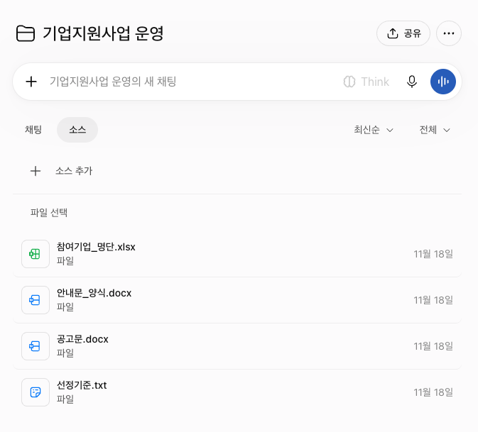

2~4교시 미션형 수정안 (검토용)
※ 커리큘럼 과업·프롬프트·응답 샘플·결과 파일은 현행 교안과 같습니다. 교시마다 6개 미션(팀장 메시지 → 먼저 찍어 보기 → 직접 쓰기·AI에게 맡기기 → 함정 찾기)과 내 업무에 적용하는 MY MISSION 1개로 재구성했습니다.
2교시신청서·증빙자료 검토 및 누락 확인무엇을 확인할지부터 정하기AI가 멈춘 곳, 누가 정하나AI보다 먼저, 한 건 직접 열기외 미션 3개50분
학습목표
제출서류 4종과 검토기준표 8개 항목을 원문 근거와 함께 정리
신청서 PDF 10건에서 기업 정보를 추출하고 출처를 남김
신청서·4대보험 증빙·명단을 접수번호로 대조해 상태를 구분
검토 결과로 보완 대상과 담당자 확인 질문, 요청문 초안 작성
- 진행 순서 · 제출 기준 확인 → 신청서 접수목록 → 증빙 대조·누락 확인 → 보완 요청 작성 → 정리와 셀프 체크
- 진행 방식 · 1교시에 만든 기업지원사업 운영 프로젝트에서 이어서 진행합니다.
- 파일 관리 · 실습 원본 파일은 고치지 않습니다. AI가 만든 파일은 내려받아 05_결과물에 저장합니다(예: 20261204_접수목록_v1.xlsx, 고치면 _v2). 담당자가 검토를 마친 최종본만 06_최종 폴더에 직접 넣습니다.
시작 전 · 2교시 자료 준비
2교시는 접수된 신청서·증빙을 원본으로 정리하고 누락을 확인하는 단계입니다. 1교시 결과물 위에서 이어집니다. 1교시를 끝까지 마치지 못했다면 아래 묶음을 내려받아 같은 출발점에서 시작합니다.
- 05_결과물 · 20261204_샘플분류표_v1.xlsx, 샘플 안내문 3종(선정·보완·미선정) v1, 변경이력.md
- 06_최종 · 1교시에 승인한 최종 안내문 3종 · 3교시 안내문 작성에서 사용
- 프로젝트가 없다면 · 1교시 3-3 순서대로 ‘기업지원사업 운영’ 프로젝트를 만들고 공통 파일 4개를 올린 뒤 시작합니다.
- 넣는 방법 · 압축을 풀어 내 기업지원사업_에이전트 폴더의 05_결과물·06_최종에 넣습니다. 같은 이름의 내 파일이 이미 있으면 덮어쓰지 말고 내 파일을 그대로 씁니다.
이번 교시에 새로 쓰는 파일은 아래 두 곳에 있습니다.
기업지원사업_에이전트/ ├─ 00_지침·양식/ │ ├─ 공고문.docx ← 1교시에 올림 │ ├─ 선정기준.txt ← 1교시에 올림 │ └─ 검토기준표.xlsx ← 이번에 프로젝트에 추가 ├─ 01_신청명단/ │ └─ 참여기업_명단.xlsx ← 1교시에 올림 ├─ 02_신청서류/ ← 실습 단계에서 대화창에 첨부 │ ├─ 신청서_2026-DX-001.pdf ~ 010.pdf (10건) │ ├─ 사업자등록증_2026-DX-001.pdf ~ 010.pdf (10건) │ ├─ 재무제표_2026-DX-001.pdf ~ 009.pdf (9건 · 010 없음) │ └─ 증빙_4대보험_2026-DX-001.pdf ~ 009.pdf (8건 · 003·010 없음) └─ 05_결과물/ ← AI 결과물을 내려받아 저장
※ 신청서·사업자등록증·재무제표·증빙 PDF는 프로젝트 소스가 아니라 실습 단계의 대화창에 첨부합니다. 소스 한도를 아끼고, 어떤 파일을 근거로 검토했는지 대화에 남기기 위해서입니다. 한 번에 첨부할 수 있는 수가 적으면 나눠서 올립니다.
참고검토기준표.xlsx를 프로젝트 소스로 추가하기
프로젝트 → 소스 → 소스 추가에서 기업지원사업_에이전트 → 00_지침·양식 → 검토기준표.xlsx를 선택합니다. 소스 한도에 도달했다면 1-1 단계에서 대화창에 직접 첨부해도 됩니다.
완료 확인 · 프로젝트 소스에 검토기준표.xlsx가 보이거나 대화창에 첨부할 준비가 되었고, 02_신청서류 폴더에서 신청서 10건, 사업자등록증 10건, 재무제표 9건, 4대보험 증빙 8건을 찾았으면 다음으로 이동합니다.
오늘 하루, 기업지원팀 담당자
2026 중소기업 디지털 전환 지원사업 신청이 마감됐습니다. 신청서 원본과 증빙을 열어 보면, 명단만 볼 때는 안 보이던 문제가 나옵니다.
- 먼저 찍어 보기AI 결과를 보기 전에 손들기로 예상
- 직접 쓰기미션 2개는 모범 프롬프트를 가리고 내가 먼저 작성
- AI에게 맡기기프롬프트 실행, 응답 샘플과 비교
- 함정 찾기AI가 끼워 넣은 틀린 줄 골라내기
- MY MISSION마지막에 내 사업으로 프롬프트를 바꿔 실행
무엇을 확인할지부터 정하기
STEP 1먼저 찍어 보기 손들기 · AI 결과를 보기 전에
공고문 「3. 제출 서류」에 적힌 서류는 몇 종일까요?
STEP 2내가 먼저 프롬프트 쓰기 모범 프롬프트는 가려져 있습니다 · 칸마다 한 줄씩
힌트
공고문.docx · 선정기준.txt · 검토기준표.xlsx
힌트
공고문 「3. 제출 서류」 4종 + 검토기준표의 값 대조 항목
힌트
검토 항목 | 확인 기준 | 확인 방법 | 근거
힌트
폴더에 없는 서류·기준일은 [확인 필요]로 남김
힌트
지금은 기준 정리만, 신청서 검토는 다음 요청까지 대기
내 프롬프트 점검 · 해당하는 항목을 체크합니다.
0 / 5
STEP 3내 결과와 모범 프롬프트·응답 샘플 비교하기
1-1공고문에서 제출 기준 추출하기
서류를 보기 전에 무엇을 확인할지부터 정합니다. 같은 프로젝트에서 새 대화를 열고, 공고문의 제출 서류와 검토기준표의 확인 항목을 하나의 기준표로 정리합니다.
✎ { }로 표시한 부분은 수정할 곳입니다. 채워진 샘플로 바로 실행하거나 내 업무에 맞게 바꿔 사용하세요.
[자료] 이 프로젝트에 올린 공고문.docx, 선정기준.txt, {검토기준표.xlsx}를 읽어.
[요청] 공고문 「3. 제출 서류」의 4종과 검토기준표의 값 대조 항목을 검토 항목 | 확인 기준 | 확인 방법 | 근거 열의 표로 정리해.
[확인] 폴더에 없는 서류나 기준일처럼 자료만으로 확정할 수 없는 항목은 [확인 필요]로 남겨.
[범위] 지금은 기준 정리만 하고 신청서 검토는 다음 요청을 기다려. 파일을 읽을 수 없으면 대화창에 첨부해 달라고 알려 줘.[예시 결과 보기] GPT 응답 샘플
| 검토 항목 | 확인 기준 | 확인 방법 | 근거 |
|---|---|---|---|
| 참여 신청서 제출 | 참여 신청서 1부, 붙임 양식 | 파일 존재 여부 확인. 붙임 양식은 폴더 목록에서 확인되지 않아 양식 일치 여부는 [확인 필요] | 공고문 「3. 제출 서류」, 검토기준표 ‘검토기준’ 2행 |
| 사업자등록증 제출 | 사본 1부 | 파일 존재 여부 확인. 별도 파일이 폴더 목록에 없어 [확인 필요]. 다른 파일에 포함됐는지는 미검토 | 공고문 「3. 제출 서류」, 검토기준표 ‘검토기준’ 3행 |
| 재무제표 제출 | 최근 1년 재무제표 1부 | 파일 존재 여부와 대상 기간 확인. 별도 파일이 없고 ‘최근 1년’의 구체적인 회계기간이 명시되지 않아 [확인 필요] | 공고문 「3. 제출 서류」, 선정기준 ‘필수 제출서류’, 검토기준표 ‘검토기준’ 4행 |
| 4대보험 가입자명부 제출 | 가입자명부 1부 | 파일 존재 여부 확인. 발급일·인원 산정 기준일은 명시되지 않아 [확인 필요] | 공고문 「3. 제출 서류」, 검토기준표 ‘검토기준’ 5행 |
| 소재지 일치 | 신청서 소재지 = 명단 소재지. 본사는 대전광역시에 소재 | 신청서와 명단의 소재지를 대조하고 본사 소재지인지 확인 | 검토기준표 ‘검토기준’ 6행, 선정기준 ‘자격요건’ 1번 |
| 근로자 수 일치 | 신청서 상시근로자 수 = 4대보험 가입자명부 인원. 자격 범위는 5명 이상 99명 이하 | 신청서와 명부 인원을 대조하고 범위 확인. 명부 인원의 상시근로자 산정 방식·기준일은 [확인 필요] | 검토기준표 ‘검토기준’ 7행, 선정기준 ‘자격요건’ 3번 |
| 업력 | 설립일 기준, 2026-11-20 기준 1년 이상 | 신청서 설립일을 확인하여 기준일과 대조 | 검토기준표 ‘검토기준’ 8행, 선정기준 ‘자격요건’ 2번 |
| 대표자 일치 | 신청서 대표자 = 명단 대표자 | 신청서와 명단 대조. 불일치 시 처리 기준은 [확인 필요] | 검토기준표 ‘검토기준’ 9행. 근거 열은 ‘-’로 기재 |
완료 확인 · 제출서류 4종과 값 대조 항목 4종이 원문과 같은지 확인하고, [확인 필요]로 남은 항목을 표시했으면 같은 대화에서 다음으로 이동합니다.
STEP 4함정 찾기 AI 결과에 이런 줄이 있다면? 틀린 줄 2개를 모두 고르세요
- 폴더에 없는 서류를 ‘미제출’이라고 기준표에 적음
- 자료만으로 확정할 수 없는 기준일을 [확인 필요]로 남김
- 기준을 정리하면서 신청서 검토까지 바로 진행
- 검토 항목마다 근거(공고문·검토기준표)를 표기
AI가 멈춘 곳, 누가 정하나
STEP 1먼저 찍어 보기 손들기 · AI 결과를 보기 전에
[확인 필요] 유형마다 처리 방법을 골라 보세요.
STEP 2직접 확인하기
1-2[확인 필요] 처리 방법 정하기
1-1 응답에는 AI가 자료만으로 확정하지 못한 항목이 [확인 필요]로 남아 있습니다. 실습 2로 넘어가기 전에 유형별로 어떻게 처리할지 정합니다.
| [확인 필요] 유형 | 예시 (1-1 응답) | 처리 |
|---|---|---|
| 기준 해석 | 대표자 불일치 시 처리 기준 | 담당자가 기준을 정해 대화에 알려 주고 진행 |
| 자료 미제공 | 붙임 양식, 사업자등록증·재무제표 파일이 폴더 목록에 없음 | 실습 2에서 제출 서류 PDF를 첨부해 파일 존재 여부를 확인하고, 그래도 없으면 ‘제공 폴더 미확인’으로 기록한 뒤 실제 접수는 담당자가 확인 |
| 기간·기준일 | 재무제표 회계기간, 4대보험 발급일·인원 산정 기준일 | 원본 값과 기준일을 함께 기록하고, 판단은 담당자가 함 |
[확인 필요]는 AI가 멈춘 지점입니다. 담당자가 정하지 않은 채 실습 2로 넘어가면 AI가 임의로 판단할 수 있습니다.
AI보다 먼저, 한 건 직접 열기
STEP 1먼저 찍어 보기 손들기 · AI 결과를 보기 전에
신청서_2026-DX-001.pdf의 상시근로자 수는?
명단에 대전 대덕구로 적힌 005. 신청서의 본사 소재지는?
STEP 2직접 확인하기
실습 1-1신청서 한 건 직접 열어 보기
신청서_2026-DX-001.pdf와 신청서_2026-DX-005.pdf를 열고 위 질문의 답을 찾습니다.
신청서 한 건 직접 열어 보기
02_신청서류/신청서_2026-DX-001.pdf를 열어 항목 위치를 확인합니다. 1쪽 표에 아래 항목이 순서대로 있습니다.
- 기업 정보 · 접수번호, 기업명, 대표자, 본사 소재지, 설립일, 업종, 상시근로자 수
- 신청 내용 · 도입 희망 솔루션, 신청 금액(자부담 20% 포함)
- 제출 서류 · 사업자등록증·재무제표·4대보험 가입자명부의 (제출)·(미제출) 표기, 아래쪽에 신청일
신청서 10건, 접수목록으로
STEP 1먼저 찍어 보기 손들기 · AI 결과를 보기 전에
005의 소재지 — 명단은 대전, 신청서는 세종. 접수목록에는?
STEP 2AI에게 맡기고 결과 확인하기
실습 1신청서 10건을 접수목록으로 정리하기
1-1과 같은 대화창에서 이어서 진행합니다. 신청서 한 건을 먼저 직접 열어 보고, 10건을 AI로 추출한 뒤 원문과 대조합니다.
신청서 10건 첨부하고 접수목록 만들기
대화창의 +(파일 첨부)로 02_신청서류의 신청서 PDF 10건을 첨부한 뒤 아래 프롬프트를 입력합니다.
✎ { }로 표시한 부분은 수정할 곳입니다. 채워진 샘플로 바로 실행하거나 내 업무에 맞게 바꿔 사용하세요.
[자료] 지금 첨부한 신청서 PDF {10건(2026-DX-001~010)}을 읽어.
[추출] 접수번호, 기업명, 대표자, 본사 소재지, 설립일, 상시근로자 수, 신청 금액(원), 자부담 문구, 신청서에 적힌 제출 서류 3종의 표기, 신청일, 출처 파일과 쪽을 추출해.
[원칙] 원문 값을 그대로 옮기고, 참여기업_명단.xlsx 값으로 덮어쓰지 마. 읽을 수 없는 값은 ‘원문 확인 필요’로 표시해.
[결과물] 접수번호마다 한 행인 접수목록 XLSX를 만들어. 10행인지, 접수번호 중복이 없는지 확인해.
[진행] 추출한 표를 먼저 보여 주고, 내가 확인하면 {20261204_접수목록_v1.xlsx}를 만들어. 변경이력 행도 함께 보여 줘.[예시 결과 보기] GPT 응답 샘플
네. 첨부해 주신 신청서 PDF 10건을 확인했습니다. 참여기업_명단.xlsx는 읽거나 값 대체에 사용하지 않았습니다. 모든 신청서는 1쪽이며, 10행·접수번호 중복 0건을 확인했습니다.
화면에서도 원문 추출값을 전달드립니다. 가독성을 위해 두 표로 나눴으며, XLSX에는 접수번호마다 한 행으로 합칩니다.
| 접수번호 | 기업명 | 대표자 | 본사 소재지 | 설립일 | 상시근로자 수 | 신청 금액(원) | 신청일 |
|---|---|---|---|---|---|---|---|
| 2026-DX-001 | (주)이음테크 | 대표001 | 대전광역시 서구 | 2025-09-10 | 15명 | 20,000,000원 | 2026년 11월 11일 |
| 2026-DX-002 | (주)채움네트웍스 | 대표002 | 대전광역시 동구 | 2023-06-02 | 15명 | 18,000,000원 | 2026년 11월 8일 |
| 2026-DX-003 | (주)바른팩토리 | 대표003 | 충북 청주시 | 2021-10-26 | 55명 | 18,000,000원 | 2026년 11월 16일 |
| 2026-DX-004 | (주)늘봄솔루션 | 대표004 | 대전광역시 중구 | 2014-01-14 | 18명 | 12,000,000원 | 2026년 11월 16일 |
| 2026-DX-005 | (주)나래디자인 | 대표005 | 세종특별자치시 조치원읍 | 2024-08-21 | 42명 | 15,000,000원 | 2026년 11월 16일 |
| 2026-DX-006 | (주)누리랩스 | 대표006 | 대전광역시 유성구 | 2014-02-14 | 70명 | 20,000,000원 | 2026년 11월 19일 |
| 2026-DX-007 | (주)한빛팩토리 | 대표007 | 대전광역시 서구 | 2014-06-23 | 49명 | 12,000,000원 | 2026년 11월 16일 |
| 2026-DX-008 | (주)도담물산 | 대표508 | 대전광역시 동구 | 2023-10-19 | 6명 | 18,000,000원 | 2026년 11월 17일 |
| 2026-DX-009 | (주)새봄테크 | 대표009 | 대전광역시 중구 | 2023-09-25 | 8명 | 12,000,000원 | 2026년 11월 14일 |
| 2026-DX-010 | (주)라온물산 | 대표010 | 대전광역시 중구 | 2024-05-04 | 88명 | 20,000,000원 | 2026년 11월 13일 |
| 접수번호 | 자부담 문구 | 사업자등록증 표기 | 재무제표 표기 | 4대보험 가입자명부 표기 | 출처 파일 | 쪽 |
|---|---|---|---|---|---|---|
| 2026-DX-001 | (자부담 20% 포함) | 사업자등록증(제출) | 재무제표(제출) | 4대보험 가입자명부(제출) | 신청서_2026-DX-001.pdf | 1 |
| 2026-DX-002 | (자부담 20% 포함) | 사업자등록증(제출) | 재무제표(제출) | 4대보험 가입자명부(제출) | 신청서_2026-DX-002.pdf | 1 |
| 2026-DX-003 | (자부담 20% 포함) | 사업자등록증(제출) | 재무제표(제출) | 4대보험 가입자명부(제출) | 신청서_2026-DX-003.pdf | 1 |
| 2026-DX-004 | (자부담 20% 포함) | 사업자등록증(제출) | 재무제표(제출) | 4대보험 가입자명부(제출) | 신청서_2026-DX-004.pdf | 1 |
| 2026-DX-005 | (자부담 20% 포함) | 사업자등록증(제출) | 재무제표(제출) | 4대보험 가입자명부(제출) | 신청서_2026-DX-005.pdf | 1 |
| 2026-DX-006 | (자부담 20% 포함) | 사업자등록증(제출) | 재무제표(제출) | 4대보험 가입자명부(제출) | 신청서_2026-DX-006.pdf | 1 |
| 2026-DX-007 | (자부담 20% 포함) | 사업자등록증(제출) | 재무제표(제출) | 4대보험 가입자명부(제출) | 신청서_2026-DX-007.pdf | 1 |
| 2026-DX-008 | (자부담 20% 포함) | 사업자등록증(제출) | 재무제표(제출) | 4대보험 가입자명부(제출) | 신청서_2026-DX-008.pdf | 1 |
| 2026-DX-009 | (자부담 20% 포함) | 사업자등록증(제출) | 재무제표(제출) | 4대보험 가입자명부(제출) | 신청서_2026-DX-009.pdf | 1 |
| 2026-DX-010 | (자부담 20% 포함) | 사업자등록증(제출) | 재무제표(미제출) | 4대보험 가입자명부(제출) | 신청서_2026-DX-010.pdf | 1 |
008의 ‘대표508’과 010의 ‘재무제표(미제출)’도 원문 그대로입니다. 판독하지 못한 값은 없습니다. 제출 표기는 신청서에 적힌 내용이며, 실제 증빙 제출 여부를 확인한 결과는 아닙니다.
변경이력 예정 행은 다음과 같습니다.
| 날짜 | 파일명 | 버전 | 바뀐 내용 |
|---|---|---|---|
| 실제 저장일 | 20261204_접수목록_v1.xlsx | v1 | 첨부된 신청서 PDF 10건의 원문 항목과 출처·쪽 추출. 10행 및 접수번호 중복 없음 확인. 명단 값 미사용 |
현재 해당 이름의 XLSX는 없어 새로 생성하게 됩니다. 이 표를 확인해 주시면 파일 생성과 변경이력 기록을 진행하겠습니다.
완료 확인 · 신청서 001을 직접 열어 접수목록의 값과 대조하고, 10행·중복 0건을 확인합니다. 파일은 05_결과물에 저장합니다.
STEP 3함정 찾기 AI 결과에 이런 줄이 있다면? 틀린 줄 2개를 모두 고르세요
- 001 상시근로자를 명단 값 8명으로 기재
- 008 대표자를 신청서 원문대로 ‘대표508’로 기재
- 010 재무제표를 신청서 표기대로 ‘미제출’로 기재
- 흐릿해서 안 읽히는 값을 명단에서 가져와 채움
기준점 확인 · 접수목록은 10행이어야 합니다. 001 근로자 15명 · 005 소재지 세종특별자치시 · 008 대표자 대표508 · 010 재무제표 미제출이 원문 그대로 들어갔는지 확인합니다. 명단 값(8명·대전 대덕구·대표008)으로 바뀌어 있으면 [원칙]이 지켜지지 않은 것입니다.
증빙 27개, 숨은 문제 찾기
STEP 1먼저 찍어 보기 손들기 · AI 결과를 보기 전에
10건 중 문제가 하나도 없는 기업은 몇 곳일까요?
STEP 2AI에게 맡기고 결과 확인하기
2-1세 자료를 접수번호 하나로 연결하기
검토는 항상 접수번호를 기준으로 합니다. 같은 기업의 신청서·증빙·명단을 한 줄에 놓고 검토기준표의 항목을 하나씩 비교합니다.
| 검토 항목 | 신청서 | 4대보험 증빙 | 명단 | 비교 방법 |
|---|---|---|---|---|
| 소재지 | 본사 소재지 | - | D열 소재지 | 신청서 ↔ 명단 |
| 근로자 수 | 상시근로자 수 | 가입자 수(합계) | G열 상시근로자 | 신청서 ↔ 증빙 (명단은 참고) |
| 업력 | 설립일 | - | F열 업력 | 설립일 → 2026-11-20 기준 계산 |
| 대표자 | 대표자 | - | C열 대표자 | 신청서 ↔ 명단 |
| 제출 서류 | (제출)·(미제출) 표기 | 파일 존재 여부 | I~K열 | 표기와 파일을 각각 확인 |
2-2다른 값은 고치지 않고 질문으로 남기기
- 양쪽 값을 모두 보존 · 신청서 15명, 증빙 8명처럼 두 값과 출처를 함께 적습니다. 어느 한쪽으로 고치지 않습니다.
- 기준일을 함께 기록 · 4대보험 증빙의 기준일은 2026-10-31입니다. 기준일이 다르면 숫자가 다를 수 있으므로 허위로 단정하지 않습니다.
- 판정은 담당자 확인 전 단계 · 적합·보완·확인 필요는 서류 검토 결과이며, 선정·탈락을 결정하지 않습니다.
실습 2신청서·증빙·명단 대조해 누락·불일치 검토표 만들기
실습 1과 같은 대화창에서 이어서 진행합니다. 제출 서류 PDF를 첨부하고, 계획을 확인한 뒤 검토표를 만듭니다.
한 건 먼저 직접 대조하기
신청서_2026-DX-001.pdf와 증빙_4대보험_2026-DX-001.pdf를 나란히 엽니다. 신청서의 상시근로자 수는 15명, 증빙의 가입자 수(합계)는 8명(기준일 2026-10-31)입니다. AI 결과가 이 값과 같은지 나중에 대조합니다.
제출 서류 첨부하고 검토표 만들기
대화창에 02_신청서류의 사업자등록증 10건, 재무제표 9건, 4대보험 증빙 8건을 첨부합니다. 한 번에 올리기 어려우면 서류 종류별로 나눠 올리고, 모두 첨부한 뒤 아래 프롬프트를 입력합니다.
✎ { }로 표시한 부분은 수정할 곳입니다. 채워진 샘플로 바로 실행하거나 내 업무에 맞게 바꿔 사용하세요.
[자료] 앞에서 만든 접수목록, 지금 첨부한 사업자등록증 {10건}·재무제표 {9건}·4대보험 증빙 {8건}과 이 프로젝트의 참여기업_명단.xlsx와 검토기준표.xlsx를 사용해. 읽을 수 없는 파일은 먼저 다시 요청해.
[검토] 접수번호로 자료를 연결하고 검토기준표 8개 항목을 기업별로 대조해. 제출 서류 4종은 ‘확인 범위’대로 파일 존재 여부만 확인하고, 신청서의 제출 표기와 파일이 다르면 함께 기록해.
[상태] 일치·불일치·신청서상 미제출·제공 폴더 미확인으로 구분해. 파일이 없다는 이유만으로 실제 미제출로 바꾸지 마.
[판정] 적합·보완·확인 필요는 이번 자료로 확인한 범위의 서류 검토 판정이며 최종 적격·선정 판정이 아니야. 자격 관련 확인 또는 개별 파일 미확인이 있으면 ‘확인 필요’, 확정된 미제출·소명할 불일치가 있으면 ‘보완’, 개별 문제가 없으면 ‘적합’으로 표시해. 두 상태가 겹치면 보완을 우선 집계하되 확인 항목은 그대로 남겨. 이 우선순위는 이번 실습의 집계 규칙임을 적어.
[결과물] 요약·검토표·기업별 판정 시트의 XLSX를 만들어. 검토표는 문제 항목만 접수번호 | 검토 항목 | 신청서 값·출처 | 증빙 값·출처 | 명단 값·셀 | 상태 | 판정 | 담당자 확인 질문 열로 기록해.
[원칙] 다른 값은 모두 보존하고 원본을 고치거나 선정·탈락을 확정하지 마.
[진행] 작업 계획을 먼저 보여 주고, 내가 승인하면 {20261204_누락불일치검토표_v1.xlsx}를 만들어. 변경이력 행도 함께 보여 줘.[예시 결과 보기] GPT 응답 샘플
첨부해 주신 자료와 프로젝트 파일만 기준으로 다음 계획대로 진행하겠습니다. 이전 검토 결과는 그대로 재사용하지 않겠습니다.
| 구분 | 작업 계획 |
|---|---|
| 사용할 자료 | 접수목록, 사업자등록증 10건·재무제표 9건·4대보험 증빙 8건, 명단, 검토기준표 |
| 읽기 확인 | 파일을 읽을 수 있는지 먼저 점검하고, 읽을 수 없는 파일은 재요청 |
| 대조 | 접수번호로 연결하여 검토기준표 8개 항목 확인. 제출 서류 4종은 파일 존재만 확인하고 신청서 제출 표기와 차이 기록 |
| 상태 | 일치·불일치·신청서상 미제출·제공 폴더 미확인으로 구분. 파일 부재만으로 실제 미제출을 확정하지 않음 |
| 판정 | 보완을 우선 집계하고, 겹치는 확인 필요 항목도 보존. 이번 실습의 집계 규칙이며 최종 적격·선정 판정이 아님을 명시 |
| 결과물 | 요약·검토표·기업별 판정 3개 시트. 검토표는 문제 항목만 요청하신 8개 열로 기록하고, 기업별 판정과 잔여 확인 항목 기록 |
| 검증 | 기업 10건·접수번호 중복·판정 합계·출처 파일과 쪽·명단 셀 확인 |
| 파일 | 20261204_누락불일치검토표_v1.xlsx를 만들어 내려받을 수 있게 제공. 근거 원본은 수정하지 않음 |
변경이력.md에 붙여 넣을 행은 다음과 같습니다.
| 날짜 | 파일명 | 버전 | 바뀐 내용 |
|---|---|---|---|
| 실제 저장일 | 20261204_누락불일치검토표_v1.xlsx | v1 | 첨부 자료 기준 8개 항목 대조, 문제 항목·출처·담당자 질문과 기업별 판정 기록. 잔여 확인 항목 보존 |
이 계획을 승인해 주시면 XLSX를 만들어 내려받을 수 있게 드리겠습니다.
[예시 결과 보기] 계획 승인 후 결과 : v1.1
위 계획을 승인하면 검토표가 20261204_누락불일치검토표_v1.1.xlsx로 갱신됩니다. 기존 v1은 그대로 두고 버전만 올려 새 파일로 내려받습니다.
| 서류 검토 판정 | 기업 수 | 접수번호 |
|---|---|---|
| 적합 | 3 | 004, 006, 009 |
| 보완 | 5 | 001, 005, 007, 008, 010 |
| 확인 필요 | 2 | 002, 003 |
| 합계 | 10 | 문제 항목 11행 |
변경이력.md에 붙여 넣을 행은 다음과 같습니다.
| 날짜 | 파일명 | 버전 | 바뀐 내용 |
|---|---|---|---|
| 2026-11-23 | 20261204_누락불일치검토표_v1.1.xlsx | v1.1 | 첨부 자료 기준으로 계획 승인 후 다시 8개 항목 대조. 문제 11행, 적합 3·보완 5·확인 필요 2건. 보완 우선 실습 집계 규칙 및 잔여 확인 질문 기록 |
완료 확인 · 직접 대조한 001의 15명·8명이 검토표와 같은지 확인하고, 불일치 행마다 양쪽 값과 출처가 있는지 확인합니다. 파일은 05_결과물에 저장합니다.
STEP 3함정 찾기 AI 결과에 이런 줄이 있다면? 틀린 줄 2개를 모두 고르세요
- 폴더에 4대보험 파일이 없는 003·010을 ‘미제출’로 판정
- 002 체납 ‘확인 중’을 확인 필요로 분류
- 001 근로자 수를 신청서 15명 · 증빙 8명(기준일 2026-10-31) 모두 기록
- 불일치한 값을 명단 값으로 고쳐서 표를 정리
기준점 확인 · 기업별 판정은 적합 3(004·006·009) · 보완 5(001·005·007·008·010) · 확인 필요 2(002·003) = 10건, 문제 항목은 11행입니다. 불일치 4건(001·007 근로자 수, 005 소재지, 008 대표자), 제공 폴더 미확인(003·010 4대보험), 신청서상 미제출(010 재무제표), 8개 항목 외 자격 확인(002 체납 확인 중)이 모두 있어야 합니다. 003·010의 4대보험이 ‘미제출’로 적혀 있으면 [상태] 구분을 다시 요청합니다.
기업에 물을까, 우리가 확인할까?
STEP 1먼저 찍어 보기 손들기 · AI 결과를 보기 전에
AI에게 묻기 전에 먼저 정해 보세요. 기업마다 손들기.
STEP 2내가 먼저 프롬프트 쓰기 모범 프롬프트는 가려져 있습니다 · 칸마다 한 줄씩
힌트
누락·불일치 검토표 · 참여기업_명단.xlsx · 안내문_양식.docx · 공고문.docx
힌트
접수번호 | 요청 내용 | 처리 · 처리 = 보완 요청·소명 요청·내부 확인·기록만
힌트
제공 폴더 미확인·자격 관련 불일치는 담당자 확인 질문으로 · 008은 내부 확인
힌트
010 재무제표 보완 · 007 근로자 수 소명 2건만 요청문 작성
힌트
목록 먼저 → 승인 후 보완요청검토초안_v1.docx
내 프롬프트 점검 · 해당하는 항목을 체크합니다.
0 / 5
STEP 3내 결과와 모범 프롬프트·응답 샘플 비교하기
3-1보완 요청 목록에 들어갈 내용
검토표의 모든 문제를 기업에 보내지 않습니다. 자격 요건과 함께 보고 처리 방법을 나눕니다.
- 외부 요청 · 신청서상 미제출(010 재무제표)과 기업이 설명해야 할 불일치(007 근로자 수)는 기업에 요청합니다.
- 내부 확인 · 제공 폴더 미확인(003·010 4대보험 증빙과 인원 대조), 자격에 영향을 주는 사항(002 체납, 003·005 소재지), 확인 방법을 먼저 정해야 하는 불일치(008 대표자)는 담당자가 먼저 확인합니다.
- 자격 미충족 가능 기업 · 1교시 샘플에서 미선정으로 분류한 001(서류평가 66점)과 본사가 충북 청주시인 003은 외부 요청이 필요한지부터 담당자가 확인합니다.
실습 3보완 요청 목록과 요청문 초안 만들기
실습 2와 같은 대화창에서 이어서 진행합니다. 검토표와 명단을 함께 보고, 내부 확인 질문과 외부 요청문을 나눠 작성합니다.
보완 요청 목록과 요청문 작성하기
실습 2에서 만든 검토표를 그대로 사용합니다. 현재 대화에서 파일을 읽을 수 없다면 05_결과물/20261204_누락불일치검토표_v1.xlsx를 대화창에 첨부합니다.
✎ { }로 표시한 부분은 수정할 곳입니다. 채워진 샘플로 바로 실행하거나 내 업무에 맞게 바꿔 사용하세요.
[자료] 앞에서 만든 누락·불일치 검토표, 이 프로젝트의 참여기업_명단.xlsx, 안내문_양식.docx와 공고문.docx를 사용해.
[목록] 검토표의 보완·확인 필요 항목을 접수번호 | 요청 내용 | 처리 열로 정리해. 처리는 보완 요청·소명 요청·내부 확인·기록만으로 나눠. 005 소재지, 003·010 증빙, 008 대표자 확인도 목록에 빠짐없이 남겨. 008은 확인 방법이 정해지기 전에는 내부 확인으로 표시해.
[내부] 제공 폴더 미확인과 자격에 영향을 주는 불일치는 담당자가 확인할 질문으로 작성해.
[외부] {2026-DX-010 재무제표 보완, 2026-DX-007 근로자 수 소명} 요청문을 안내문 양식 [B]의 문체로 작성해. 기한은 공고문의 보완 서류 제출 마감과 대조하고, 양식에 없는 정보는 [확인 필요]로 남겨.
[진행] 목록과 작성 범위를 먼저 보여 주고, 내가 승인하면 {20261204_보완요청검토초안_v1.docx}를 내부 검토용으로 만들어. 변경이력 행도 함께 보여 주고, 실제 발송은 하지 마.[예시 결과 보기] GPT 응답 샘플
검토표의 문제 항목 11건을 아래처럼 처리하겠습니다.
| 접수번호 | 요청 내용 | 처리 |
|---|---|---|
| 2026-DX-001 | 신청서 15명·증빙 8명의 차이 사유와 적용 기준일은 무엇인가요? 외부 소명이 필요한지 담당자가 먼저 확인 | 내부 확인 |
| 2026-DX-002 | 체납 여부 ‘확인 중’이 해소됐나요? 확인 결과와 근거 기록 필요 | 내부 확인 |
| 2026-DX-003 | 신청서에는 제출로 표시된 4대보험 증빙이 별도 접수·다른 첨부·변경된 파일명으로 보관돼 있나요? | 내부 확인 |
| 2026-DX-003 | 신청서와 명단의 충북 청주시 주소가 실제 본사인가요? 대전 소재 요건 관련 사실 확인 필요 | 내부 확인 |
| 2026-DX-003 | 증빙 위치 확인 후 신청서의 상시근로자 55명과 대조할 수 있나요? | 내부 확인 |
| 2026-DX-005 | 신청서는 세종특별자치시 조치원읍, 명단은 대전 대덕구입니다. 현재 본사와 소재지 요건을 확인할 방법·자료는 무엇인가요? | 내부 확인 |
| 2026-DX-007 | 신청서 49명·4대보험 증빙 42명의 차이 사유와 인원 산정 기준·기준일 소명 요청 | 소명 요청 |
| 2026-DX-008 | 신청서 ‘대표508’·명단 ‘대표008’의 차이를 어떤 자료와 절차로 확인할까요? 확인 방법 결정 전 외부 요청 보류 | 내부 확인 |
| 2026-DX-010 | 신청서상 미제출로 표시된 최근 1년 재무제표 보완 요청 | 보완 요청 |
| 2026-DX-010 | 신청서에는 제출로 표시된 4대보험 증빙이 별도 접수·다른 첨부·변경된 파일명으로 보관돼 있나요? | 내부 확인 |
| 2026-DX-010 | 증빙 위치 확인 후 신청서의 상시근로자 88명과 대조할 수 있나요? | 내부 확인 |
처리는 내부 확인 9건·소명 요청 1건·보완 요청 1건·기록만 0건입니다. 첨부 자료에서 확인되지 않은 파일을 실제 미제출로 단정하지 않겠습니다.
승인 후 작성할 DOCX의 범위는 다음과 같습니다.
- 내부 검토 목록: 위 11건, 근거 위치, 담당자 확인 질문 수록
- 외부 요청문 초안 2건: 010 재무제표 보완, 007 근로자 수 소명만 작성
- 문체: 안내문 양식 [B]의 인사·기업 및 접수번호 표시·요청 항목·기한·문의 구성을 따름. 007은 서류 누락 대신 인원 차이를 정확히 설명
- 기한: 양식 [B]와 공고문이 모두 2026년 12월 11일(금) 18시로 일치
- 확인 필요: [B]에 보완 수신 이메일이 명시되지 않아
[확인 필요]로 표시. 007의 소명 자료 형식·산정 기준·기준일도 임의로 정하지 않음 - 파일:
20261204_보완요청검토초안_v1.docx로 생성. 내부 검토용으로 표시하고 실제 발송은 하지 않음
변경이력 예정 행:
| 날짜 | 파일명 | 버전 | 바뀐 내용 |
|---|---|---|---|
| 실제 저장일 | 20261204_보완요청검토초안_v1.docx | v1 | 문제 항목 11건의 처리 목록과 담당자 질문, 010 재무제표 보완·007 근로자 수 소명 요청문 작성. 공고문 기한 대조 및 확인 필요 사항 표시. 내부 검토용·미발송 |
이 목록과 작성 범위로 DOCX를 만들어도 될까요?
[예시 결과 보기] GPT 응답 샘플 : 작성 완료
20261204_보완요청검토초안_v1.docx로 만들었습니다. 5쪽 전체의 화면 확인을 마쳤습니다.
- 처리 목록 11건과 담당자 확인 질문
- 010 재무제표 보완·007 근로자 수 소명 요청문
- 008 내부 확인 유지, 미정 정보
[확인 필요]표시 - 공고문과 대조한 마감: 2026년 12월 11일(금) 18시
실제 발송은 하지 않았습니다.
변경이력에 붙여 넣을 행은 다음과 같습니다.
| 날짜 | 파일명 | 버전 | 변경 내용 |
|---|---|---|---|
| 2026-11-23 | 20261204_보완요청검토초안_v1.docx | v1 | 처리 목록 11건·요청문 2건 작성, 기한 대조, 확인 필요 사항 기록. 내부 검토용·미발송 |
보완 수신 이메일, 소명 자료 형식·기준일, 재무제표 회계기간 등은 담당자 확인 사항으로 남겼습니다.
완료 확인 · 요청문의 접수번호·기업명·서류명·기한(2026-12-11 18시)을 검토표와 공고문에 대조합니다. 005 소재지 확인 결과는 3교시 분류의 확인 항목으로 넘기고, 선정 통보 전에 담당자가 결정합니다.
정답 확인 · 결과를 본 뒤 펼치기
처리 목록은 11건(내부 확인 9 · 소명 요청 1 · 보완 요청 1 · 기록만 0)이고, 외부 요청문은 010(재무제표)·007(근로자 수) 2건입니다. 002 체납, 003·005 소재지, 008 대표자, 003·010 4대보험 증빙이 내부 확인으로 들어가 있어야 합니다.
내 사업 제출서류 체크리스트 만들기
STEP 1내 업무 하나 고르기
- 내 사업 공고문의 제출 서류 조항
- 자격요건 조항
- 가점·감점 등 평가 조항
STEP 2틀을 내 업무로 바꿔 쓰기 { } 부분을 내 사업 내용으로 바꿉니다
내 프롬프트 점검 · 해당하는 항목을 체크합니다.
0 / 5
STEP 3실행하고 짝과 바꿔 보기
- 조립한 프롬프트를 ChatGPT에 붙여 넣고 실행합니다.
- 결과를 옆 사람과 바꿔 봅니다.
- 상대 결과에서 함정 1개(지어낸 정보, 틀린 숫자·기한, 빠진 [확인 필요])를 찾아 알려 줍니다.
- 찾은 함정을 막는 규칙을 내 프롬프트 [조건]에 한 줄 추가하고 다시 실행합니다.
정리
공고문과 검토기준표로 제출서류 4종과 값 대조 항목을 먼저 정리합니다.
신청서 원문 값을 접수목록으로 옮기고, 명단 값으로 덮어쓰지 않습니다.
신청서상 미제출·제공 폴더 미확인·값 불일치를 구분하고, 다른 값은 양쪽 모두 보존합니다.
자격 요건과 함께 보고 외부 요청·내부 확인·기록만으로 나눈 뒤, 담당자 승인 후 발송합니다.
Q셀프 체크
Q1. 증빙 파일이 폴더에 없으면 미제출인가요?
Q2. 신청서 15명, 증빙 8명이면 어느 값을 쓰나요?
Q3. 명단은 대전, 신청서는 세종인 005는?
Q4. 검토표의 ‘보완’이면 바로 요청문을 보내나요?
3교시선정 통보문·협약 안내문 및 행정문서 작성1교시 안내문, 그대로 써도 될까?선정 기준, AI가 제대로 읽었나100개 기업, 오늘 안에 분류외 미션 3개50분
학습목표
선정·보완·미선정·판단 보류를 구분하고 근거를 남김
1교시 최종 안내문(선정 통보·협약 서류 안내 포함)을 이메일·문자 채널에 맞게 변환
분류 결과와 후속 일정을 보고할 공문 초안 작성
대상별 문안, 건수, 날짜, 제출 정보를 원본과 대조
- 진행 순서 · 자료와 기준 확인 → 명단 분류 → 안내문·이메일·문자 → 내부 공문 → 검토와 셀프 체크
- 진행 방식 · 1교시에 만든 기업지원사업 운영 프로젝트에서 이어서 진행합니다.
- 파일 관리 · 실습 원본 파일은 고치지 않습니다. AI가 만든 파일은 내려받아 05_결과물에 저장합니다(예: 20261204_참여기업_분류표_v1.xlsx, 고치면 _v2). 담당자가 검토를 마친 최종본만 06_최종 폴더에 직접 넣습니다. 1교시에서 만든 안내문 최종본 3개(_최종_v1.docx)를 06_최종에 넣고 시작합니다.
시작 전 · 1·2교시 결과물 받기
2교시에 신청서·증빙을 검토했다면, 이제 전체 명단 100건을 분류하고 선정 통보문·협약 안내문을 작성합니다. 안내문은 1교시에 승인한 최종본을 근거로 씁니다. 앞 교시를 끝까지 마치지 못했다면 아래 묶음을 내려받아 같은 출발점에서 시작합니다.
- 05_결과물 · 20261204_샘플분류표_v1.xlsx, 샘플 안내문 3종(선정·보완·미선정) v1, 변경이력.md
- 06_최종 · 담당자가 승인한 최종 안내문 3종(20261204_샘플선정안내_최종_v1.docx 외 2개)
- 2교시 결과물 · 20261204_접수목록_v1.xlsx, 20261204_누락불일치검토표_v1.xlsx·v1.1.xlsx, 20261204_보완요청검토초안_v1.docx
- 넣는 방법 · 압축을 풀어 내 기업지원사업_에이전트 폴더의 05_결과물·06_최종에 넣습니다. 같은 이름의 내 파일이 이미 있으면 덮어쓰지 말고 내 파일을 그대로 씁니다.
- 프로젝트가 없다면 · 1교시 3-3 순서대로 ‘기업지원사업 운영’ 프로젝트를 만들고 공통 파일 4개를 올린 뒤 시작합니다.
오늘 하루, 기업지원팀 담당자
서류 검토가 끝났습니다. 오늘은 100개 기업을 분류해 선정 통보와 협약 안내를 보내고, 국장님께 보고하는 날입니다.
- 먼저 찍어 보기AI 결과를 보기 전에 손들기로 예상
- 직접 쓰기미션 2개는 모범 프롬프트를 가리고 내가 먼저 작성
- AI에게 맡기기프롬프트 실행, 응답 샘플과 비교
- 함정 찾기AI가 끼워 넣은 틀린 줄 골라내기
- MY MISSION마지막에 내 사업으로 프롬프트를 바꿔 실행
1교시 안내문, 그대로 써도 될까?
STEP 1먼저 찍어 보기 손들기 · AI 결과를 보기 전에
AI가 “보완 서류 제출 방법은 무엇인가요?”처럼 안내문에 없는 정보를 만나면 어떻게 해야 할까요?
STEP 2AI에게 맡기고 결과 확인하기
1-1검토한 최종 안내문을 대화에 전달하기
이후 이메일·문자 초안을 담당자가 검토한 최종 안내문의 내용에 맞춰 작성하도록, 선정·보완·미선정 안내문을 같은 대화창에 전달합니다.
기업지원사업_에이전트/ ├─ 00_지침·양식/ ← 1교시에 올림 │ ├─ 공고문.docx │ ├─ 선정기준.txt │ └─ 안내문_양식.docx ├─ 01_신청명단/ ← 1교시에 올림 │ └─ 참여기업_명단.xlsx ├─ 05_결과물/ ← AI 결과물을 내려받아 저장 └─ 06_최종/ ← 최종 문안을 열어 대화창에 복사 ├─ 20261204_샘플선정안내_최종_v1.docx ├─ 20261204_샘플보완요청_최종_v1.docx └─ 20261204_샘플미선정안내_최종_v1.docx
※ 무료 이용 중 소스 한도에 도달했다면, 최종 안내문 본문을 복사해 같은 프로젝트의 대화창에 선정 → 보완 → 미선정 순서로 한 유형씩 붙여 넣고, 이메일·문자 작성도 같은 대화창에서 이어갑니다.
참고소스 추가가 가능한 경우 · 파일로 올리기
프로젝트 → 소스 → 소스 추가에서 06_최종의 안내문 3개를 선택할 수도 있습니다.

✎ { }로 표시한 부분은 수정할 곳입니다. 채워진 샘플로 바로 실행하거나 내 업무에 맞게 바꿔 사용하세요.
[안내 유형] {미선정 안내}
[검토한 최종 문안]
{제목: [2026 중소기업 디지털 전환 지원사업] 1차 서류심사 결과 안내
대표001 대표님, 안녕하십니까.
귀사((주)이음테크, 접수번호 2026-DX-001)의 신청에 감사드립니다. 아쉽게도 이번 1차 서류심사에서 선정되지 않았음을 안내드립니다.
· 사유: 서류평가 66점(기준 70점 미만), 국세·지방세 체납 있음
다음 공고에 다시 참여해 주시기를 바랍니다.
문의: 기업지원팀 042-000-0000}
[사용 기준] 위 문안은 담당자가 검토한 최종 안내문이야. 이번 대화에서 이후 이메일·문자 초안의 근거로 사용해. 문안에 없는 정보는 추측하지 말고 [확인 필요]로 표시해.
[이번 단계] 전달받은 안내 유형·제출 서류·기한·제출 방법·문의처를 요약하고 본문에서 확인되지 않은 항목을 알려 줘. 지금은 수신 내용 확인까지만 하고, 이메일·문자는 다음 요청을 기다려.[예시 결과 보기] GPT 응답 샘플 : 미선정
입력 불일치 예시 · 아래는 안내 유형을 ‘선정 안내’로 지정하고 미선정 본문을 전달했을 때의 응답입니다. 위 프롬프트의 ‘미선정 안내’를 그대로 사용하면 이 유형 불일치는 발생하지 않습니다.
전달받은 문안을 확인했습니다. 이번 대화에서는 해당 문안을 담당자가 검토한 최종 안내문으로 취급하고, 이후 이메일·문자 초안 작성 시 근거로 사용하겠습니다.
현재 단계에서는 수신 내용 확인과 항목 정리까지만 진행합니다.
1. 전달받은 안내 내용 요약
안내 유형
선정 안내로 지정됨
다만 실제 본문 내용은 미선정 안내입니다. 안내 유형과 본문 사이에 불일치가 있어 확인이 필요합니다.
대상 기업
접수번호: 2026-DX-001
기업명: (주)이음테크
대표자명: 대표001
본문에 명시된 내용
심사 결과: 선정되지 않음
사유: 서류평가 66점(기준 70점 미만), 국세·지방세 체납 있음
문의처: 기업지원팀 042-000-0000
2. 제출 관련 항목 확인
| 항목 | 확인 결과 |
|---|---|
| 제출 서류 | 본문에 없음 |
| 제출 기한 | 본문에 없음 |
| 제출 방법 | 본문에 없음 |
| 문의처 | 기업지원팀 042-000-0000 |
위 세 가지 제출 관련 항목은 본문에서 확인되지 않습니다.
3. 확인 필요 항목
안내 유형과 본문 불일치
전달된 안내 유형: 선정 안내
실제 본문: 미선정 안내
[확인 필요] 이후 이메일·문자 작성 시 적용할 안내 유형을 확인해야 합니다.
추가로 제출 서류·기한·제출 방법은 전달된 문안에 없으므로 임의로 추가하지 않겠습니다.
4. 현재 처리 상태
수신 내용 확인 완료
이메일 초안 작성 대기
문자 초안 작성 대기
전달받은 문안의 내용은 이후 요청에서 근거로 사용하겠습니다. 이메일·문자 작성은 다음 지시가 있을 때까지 진행하지 않겠습니다.
[예시 결과 보기] GPT 응답 샘플 : 선정
전달받은 문안을 확인했습니다. 해당 문안은 담당자가 검토한 최종 선정 안내문으로 취급하고, 이후 이메일·문자 초안 작성 시 기준 문안으로 사용하겠습니다.
현재 단계에서는 수신 내용 확인까지만 진행합니다.
1. 안내 내용 요약
안내 유형
선정 안내
대상 기업
접수번호: 2026-DX-004
기업명: (주)늘봄솔루션
대표자명: 대표004
제출 서류
협약서(날인)
사업자 통장 사본
자부담 확약서
제출 기한
2026년 12월 18일(금) 18시까지
제출 방법
이메일 제출
이메일 주소: dx-support@example.com
문의처
기업지원팀 042-000-0000
2. 본문에서 확인되지 않은 항목
| 확인 항목 | 확인 결과 |
|---|---|
| 제출 서류별 파일 형식 | [확인 필요] |
| 이메일 제목 작성 규칙 | [확인 필요] |
| 이메일 첨부파일 용량 제한 | [확인 필요] |
| 제출 후 접수 확인 방법 | [확인 필요] |
| 담당자 성명 및 별도 연락처 | [확인 필요] |
문안에 명시된 정보만 사용하며, 누락된 정보는 임의로 보충하지 않겠습니다.
3. 이후 이메일·문자 작성 기준
기업 정보와 협약서(날인)
사업자 통장 사본
자부담 확약서 제출 요청, 2026년 12월 18일(금) 18시까지의 기한, 이메일 제출 방법과 문의처를 기준 문안 그대로 유지하겠습니다. 문안에 없는 정보는 반드시 [확인 필요]로 표시하겠습니다.
4. 현재 처리 상태
수신 내용 확인 완료
이메일 초안 작성 대기
문자 초안 작성 대기
실제 발송이나 추가 문서 작성은 진행하지 않았습니다. 다음 요청을 기다리겠습니다.
[예시 결과 보기] GPT 응답 샘플 : 보완
전달받은 문안을 확인했습니다. 해당 문안은 담당자가 검토한 최종 보완 안내문으로 취급하고, 이후 이메일·문자 초안 작성 시 기준 문안으로 사용하겠습니다.
현재 단계에서는 수신 내용 확인까지만 진행합니다.
1. 안내 내용 요약
안내 유형
보완 안내
대상 기업
접수번호: 2026-DX-010
기업명: (주)라온물산
대표자명: 대표010
제출 서류
재무제표(최근 1년)
제출 기한
2026년 12월 11일(금) 18시까지
제출 방법
이메일 제출
이메일 주소: [확인 필요: 제출 이메일 주소]
문의처
기업지원팀 042-000-0000
2. 본문에서 확인되지 않은 항목
| 확인 항목 | 확인 결과 |
|---|---|
| 제출 이메일 주소 | [확인 필요] |
| 재무제표 파일 형식 | [확인 필요] |
| 이메일 제목 작성 규칙 | [확인 필요] |
| 첨부파일 용량 제한 | [확인 필요] |
| 제출 후 접수 확인 방법 | [확인 필요] |
| 담당자 성명 | [확인 필요] |
문안에 명시된 정보만 사용하며, 누락된 정보는 임의로 보충하지 않겠습니다.
3. 이후 이메일·문자 작성 기준
기업 정보와 재무제표(최근 1년) 제출 요청, 2026년 12월 11일(금) 18시까지의 기한, 이메일 제출 방법과 문의처를 기준 문안 그대로 유지하겠습니다. 문안에 없는 정보는 반드시 [확인 필요]로 표시하겠습니다.
4. 현재 처리 상태
수신 내용 확인 완료
이메일 초안 작성 대기
문자 초안 작성 대기
실제 발송이나 추가 문서 작성은 진행하지 않았습니다. 다음 요청을 기다리겠습니다.
완료 확인 · 최종 문안을 대화에 붙여 넣고, GPT가 안내 유형과 기한·제출 정보를 정확히 확인했으면 같은 대화에서 다음 실습을 진행합니다.
STEP 3함정 찾기 AI 결과에 이런 줄이 있다면? 틀린 줄 2개를 모두 고르세요
- 최종본에 없는 제출 방법(이메일 주소)을 AI가 보기 좋게 추가
- 미선정 사유를 최종본 문구 그대로 유지
- “문의: 기업지원팀 042-000-0000”을 그대로 사용
- 안내문을 받자마자 이메일·문자를 먼저 써서 보여 줌
선정 기준, AI가 제대로 읽었나
STEP 1먼저 찍어 보기 손들기 · AI 결과를 보기 전에
서류평가 70점, 자격요건 4개 충족, 필수서류 3종 제출. 이 기업은?
STEP 2AI에게 맡기고 결과 확인하기
1-2분류 기준 대조하기
같은 프로젝트의 대화창에 아래 프롬프트를 이어서 입력해 선정기준 원문을 대조합니다. 이번 단계에서는 기준만 확인합니다.
✎ { }로 표시한 부분은 내 자료에 맞게 수정하세요.
[자료] 이 프로젝트에 올린 {선정기준.txt}를 읽어.
[요청] 자격요건 4개, 필수서류 3종, 점수 기준과 선정·보완·미선정·판단 보류 조건을 원문에 근거해 정리해.
[형식] 분류 | 조건 | 판단 근거 | 담당자 확인 항목 열의 표로 보여 주고, 출처 파일명과 해당 원문을 함께 적어.
[확인] 판정에 필요한 값이 빈칸·확인 중이면 판단 보류로 두는지 확인해. 명단의 소재지가 본사 소재지를 뜻하는지처럼 자료만으로 확정할 수 없는 항목은 확인 필요로 남겨.
[범위] 지금은 기준 대조만 하고 기업 재분류·최종 안내문 수정·이메일·문자 작성은 다음 요청을 기다려. 파일을 읽을 수 없으면 기준 본문을 대화에 붙여 넣어 달라고 알려 줘.[예시 결과 보기] GPT 응답 샘플
프로젝트에 업로드된 선정기준.txt 원문을 다시 확인했습니다.
아래는 원문에 명시된 기준과 담당자가 추가로 확인해야 할 사항을 구분한 정리입니다. 이번 작업은 기준 대조만 수행하며 기업 재분류나 안내문 수정은 하지 않습니다.
1. 자격요건 4개
출처: 선정기준.txt / 「자격요건」 원문
| 분류 | 조건 | 판단 근거 | 담당자 확인 항목 |
|---|---|---|---|
| 자격요건 ① | 본사 소재지가 대전광역시 | 원문: 본사 소재지: 대전광역시 | 명단의 소재지가 실제 본사 소재지인지 확인 |
| 자격요건 ② | 접수 마감일 기준 업력 1년 이상 | 원문: 업력: 접수 마감일(2026-11-20) 기준 1년 이상 | 업력 산정 기준일 및 기업 설립일 확인 |
| 자격요건 ③ | 상시근로자 5명 이상 99명 이하 | 원문: 상시근로자: 5명 이상 99명 이하 | 상시근로자 수 및 산정 기준 확인 |
| 자격요건 ④ | 국세·지방세 체납 없음 | 원문: 국세·지방세 체납: 없음 | 국세와 지방세 체납 여부 확인 |
적용 원칙 · 자격요건 4개를 모두 충족해야 합니다.
2. 필수 제출서류 3종
출처: 선정기준.txt / 「필수 제출서류」 원문
| 분류 | 조건 | 판단 근거 | 담당자 확인 항목 |
|---|---|---|---|
| 필수서류 ① | 사업자등록증 제출 | 원문: 사업자등록증 | 제출 여부 및 서류 확인 |
| 필수서류 ② | 재무제표(최근 1년) 제출 | 원문: 재무제표(최근 1년) | 제출 여부 및 해당 기간 확인 |
| 필수서류 ③ | 4대보험 가입자명부 제출 | 원문: 4대보험 가입자명부 | 제출 여부 및 서류 확인 |
적용 원칙 · 필수 제출서류는 총 3종이며, 선정 판정에는 3종 모두 제출되어야 합니다.
3. 점수 기준 및 분류 조건
출처: 선정기준.txt / 「분류 기준」 원문
| 분류 | 조건 | 판단 근거 | 담당자 확인 항목 |
|---|---|---|---|
| 선정 | 자격요건 4개 모두 충족 + 필수서류 3종 모두 제출 + 평가 70점 이상 | 원문: 자격요건 4개 모두 충족 + 필수 제출서류 3종 모두 제출 + 서류평가 점수 70점 이상 | 자격요건, 서류 3종, 평가점수 확인 |
| 보완 | 자격요건 4개 모두 충족 + 평가 70점 이상 + 필수서류 중 1종 이상 미제출 | 원문: 자격요건 4개 모두 충족 + 서류평가 점수 70점 이상 + 필수 제출서류 중 1종 이상 미제출 | 미제출 서류 종류 및 보완 가능 여부 확인 |
| 미선정 | 자격요건 1개 이상 미충족 또는 평가 70점 미만 | 원문: 자격요건 1개 이상 미충족, 또는 서류평가 점수 70점 미만 | 미충족 요건 또는 70점 미만 여부 확인 |
| 판단 보류 | 판단에 필요한 값이 비어 있거나 확인 중인 경우 | 원문: 판단에 필요한 값이 비어 있거나 확인 중인 경우 (담당자가 직접 확인) | 누락 항목 및 확인 중인 항목을 담당자가 직접 확인 |
4. 판단 보류 적용 여부 확인
원문에서 적용 확인
판단 보류 : 판단에 필요한 값이 비어 있거나 ‘확인 중’인 경우 (담당자가 직접 확인)
기준으로 판단할 수 없는 경우 임의로 분류하지 않고 ‘판단 보류’로 둠
| 데이터 상태 | 처리 원칙 |
|---|---|
| 자격요건 관련 값 빈칸 | 판단 보류 |
| 체납 여부 확인 중 | 판단 보류 |
| 필수서류 제출 여부 빈칸 | 판단 보류 |
| 평가점수 빈칸 | 판단 보류 |
| 필요한 값이 확인 중 | 판단 보류 |
| 모든 판단값 확인 완료 | 선정·보완·미선정 기준 적용 |
여러 항목이 동시에 누락되거나 확인 중인 경우의 처리 순서, 이미 확인된 미선정 사유와 다른 미확인 값이 함께 존재하는 경우의 우선순위는 원문에 별도로 규정되어 있지 않습니다. 임의로 우선순위를 만들어 적용하지 않고 담당자 확인이 필요합니다.
5. 자료만으로 확정할 수 없는 사항
| 확인 대상 | 자료에 있는 표현 | 확인 필요 사항 |
|---|---|---|
| 소재지 | 기준: 본사 소재지 / 명단: 소재지 | 두 항목이 동일한 의미인지 확인 |
| 업력 | 접수 마감일 기준 1년 이상 | 설립일과 업력 산정 방식 확인 |
| 상시근로자 | 5~99명 | 상시근로자 산정 기준 확인 |
| 체납 여부 | 국세·지방세 체납 없음 | 체납 확인 자료 및 확인 시점 |
| 제출서류 | 제출·미제출 | 제출된 파일의 유효성 및 내용 확인 |
| 판단 보류 우선순위 | 별도 규정 없음 | 미선정 사유와 미확인 값이 공존할 때 처리 방법 확인 |
‘소재지’를 ‘본사 소재지’로 간주해서는 안 됩니다. 원본 명단의 열 이름만으로는 본사 소재지인지 확인할 수 없습니다.
6. 원문 일정 및 최종 결정 유의사항
출처: 선정기준.txt / 「일정 및 유의사항」
| 항목 | 원문 |
|---|---|
| 1차 서류심사 결과 안내 | 2026-12-04(금) |
| 보완 서류 제출 마감 | 2026-12-11(금) 18:00 |
| 협약 서류 제출 마감 | 2026-12-18(금) 18:00 (선정 기업) |
| 최종 선정 | 담당자 검토·승인 후 확정 |
최종 선정 여부는 담당자가 검토·승인 후 확정함
7. 최종 기준 대조 결과
자격요건 4개 · 필수 제출서류 3종 · 평가 기준점수 70점 · 분류 유형 4가지
판단 보류 규정 원문 확인 완료
본사 소재지와 명단 소재지의 동일성 확인 필요
담당자 검토 시 우선 확인할 사항
- 명단의 소재지가 본사 소재지를 의미하는지.
- 빈칸·확인 중인 항목은 판단 보류로 처리하는지.
- 미선정 사유와 미확인 항목이 함께 존재할 때의 처리 우선순위.
- 최종 선정 여부는 담당자 승인 후 확정하는지.
이번 응답에서는 기업별 재분류, 기존 안내문 수정, 이메일 및 문자 작성은 수행하지 않았습니다. 이후 작업은 이 기준을 원문 근거로 삼되, 확인되지 않은 사항은 [확인 필요]로 유지하겠습니다.
완료 확인 · 자격요건 4개·필수서류 3종·70점 기준과 네 가지 분류 조건을 원본과 대조하고, 확인이 필요한 항목을 기록했으면 다음으로 이동합니다.
STEP 3함정 찾기 AI 결과에 이런 줄이 있다면? 틀린 줄 2개를 모두 고르세요
- “명단의 소재지 = 본사 소재지”라고 AI가 단정
- 값이 빈칸·확인 중이면 판단 보류로 둔다고 확인
- 기준을 정리하면서 100건 재분류까지 바로 시작
- 조건마다 출처 파일명과 원문을 함께 표기
100개 기업, 오늘 안에 분류
STEP 1먼저 찍어 보기 손들기 · AI 결과를 보기 전에
AI가 나누기 전에 찍어 보세요. 100곳 중 선정은 몇 곳일까요?
STEP 2내가 먼저 프롬프트 쓰기 모범 프롬프트는 가려져 있습니다 · 칸마다 한 줄씩
힌트
참여기업_명단.xlsx의 신청명단 시트 2~101행과 선정기준.txt
힌트
전체 100건을 선정·보완·미선정·판단 보류로 분류
힌트
빈칸·확인 중이면 판단 보류 · 명단 소재지는 본사로 보되 확인 항목에 남김 · 원본 값 수정 금지
힌트
요약·분류표·판단보류 시트 XLSX · 접수번호·기업명·원본 행·분류·근거·보완서류·확인 항목
힌트
계획 먼저 → 승인 후 20261204_참여기업_분류표_v1.xlsx · 분류별 합계 = 100 검산
내 프롬프트 점검 · 해당하는 항목을 체크합니다.
0 / 5
STEP 3내 결과와 모범 프롬프트·응답 샘플 비교하기
실습 1확인한 기준을 전체 100건에 적용하기
1-2에서 기준을 확인한 같은 대화창에서 이어서 진행합니다. 아래 프롬프트로 전체 명단 100건을 분류하고, 결과의 건수와 확인 필요 항목을 직접 검산합니다.
원본 시트와 분류에 쓸 열 확인하기
Excel에서 신청명단 시트를 열어 1행이 머리글이고 2~101행이 데이터인지 확인합니다. 작성 안내 시트는 설명용입니다.
- A열 접수번호를 비교 기준으로 씁니다. 같은 접수번호가 나오면 원본 행을 유지하고 확인 목록에 기록합니다.
- D·F·G·H열에서 소재지·업력·근로자 수·체납을, I~K열에서 제출 상태를, L열에서 평가 점수를 확인합니다.
- 미제출은 확인된 누락입니다. 빈칸·확인 중은 판정에 필요한 값이 확인되지 않은 상태입니다.
전체 100건 분류하기
✎ { }로 표시한 부분은 수정할 곳입니다. 채워진 샘플로 바로 실행하거나 내 업무에 맞게 바꿔 사용하세요.
[자료] 이 프로젝트에 올린 참여기업_명단.xlsx의 신청명단 시트 {2~101행}과 선정기준.txt를 읽어. 위에서 확인한 선정기준을 전체 100건에 적용해.
[처리 기준] ① 판정에 필요한 값이 빈칸·확인 중이면 다른 미선정 사유가 있어도 판단 보류로 둬(1교시와 같은 기준). ② 명단의 소재지는 본사 소재지로 간주하되 확인 항목에 남겨. 그 밖에 해석이 불명확하면 먼저 담당자에게 확인할 질문을 해 줘.
[결과물] 요약, 분류표, 판단보류 시트를 가진 XLSX를 만들어. 분류표에 접수번호(A), 기업명(B), 원본 행(C), 분류(D), 근거(E), 보완서류(F), 확인 항목(G)을 기록해. 판정에 쓴 원본 값과 셀 주소는 근거에 남겨. 판단보류 시트에는 확인이 필요한 값과 접수번호만 모아.
[검산] 접수번호 중복, 분류 누락, 분류별 합계와 원본 행 수 일치를 확인해. 판단 보류는 분류표에도 한 행만 유지하고, 요약에는 한 번만 집계해.
[진행] 작업 계획을 먼저 보여 주고, 내가 승인하면 {20261204_참여기업_분류표_v1.xlsx}를 만들어. 원본 값은 고치지 말고, 변경이력 행도 함께 보여 줘.[예시 결과 보기] GPT 응답 샘플
요청하신 두 가지 처리 기준을 적용해 전체 100건의 분류표를 작성했습니다.
20261204_참여기업_분류표_v1.xlsx
요약 · 분류표 · 판단보류 시트 포함 · 생성 완료
1. 분류 결과 요약
| 선정 | 보완 | 미선정 | 판단 보류 |
|---|---|---|---|
| 45 | 14 | 36 | 5 |
근거: 참여기업_명단.xlsx 신청명단 2~101행, 선정기준.txt
2. 판단 보류 대상
| 접수번호 | 확인 필요 값 | 원본 셀 |
|---|---|---|
| 2026-DX-002 | 체납 여부 확인 중 | H3 |
| 2026-DX-011 | 체납 여부 확인 중 | H12 |
| 2026-DX-063 | 서류평가 점수 빈칸 | L64 |
| 2026-DX-085 | 서류평가 점수 빈칸 | L86 |
| 2026-DX-087 | 서류평가 점수 빈칸 | L88 |
2026-DX-002는 평가점수 66점이라는 미선정 사유도 있지만, 합의한 처리 기준에 따라 판단 보류로 분류했습니다. 2026-DX-085도 업력 0.5년이라는 미충족 사유가 있지만 평가점수 빈칸이 있어 판단 보류로 분류했습니다.
3. 검산 결과
검산 통과
| 검산 항목 | 결과 |
|---|---|
| 원본 대상 행 수 | 100 |
| 분류표 기록 수 | 100 |
| 접수번호 중복 | 0 |
| 분류 누락 | 0 |
| 분류별 합계 | 100 |
| 판단보류 시트 기록 | 5 |
| 판단 보류 중복 집계 | 0 |
판단 보류 대상은 분류표에 각각 한 행씩만 기록하고, 요약에도 5건으로 한 번만 집계했습니다.
4. 적용한 작업 기준 및 주의사항
- 명단의
소재지를본사 소재지로 간주했습니다. 이는 담당자 확인 전의 작업상 가정입니다. - 판정 관련 값에 빈칸 또는
확인 중이 있으면 명확한 미선정 사유가 있더라도 판단 보류로 처리했습니다. - 분류표의 근거 열에는 판정에 사용한 원본 값과 셀 주소를 기록했습니다.
- 원본 명단의 값은 수정하지 않았습니다.
- 최종 선정 여부는 담당자의 검토·승인이 필요합니다.
5. 변경이력.md 붙여넣기용
| 날짜 | 파일명 | 버전 | 변경 내용 | 작성 표 |
|---|---|---|---|---|
| 2026-11-18 | 20261204_참여기업_분류표_v1.xlsx | v1 | 신청명단 100건 기준 대조·분류, 요약·분류표·판단보류 시트 작성 및 검산 완료 | 요약 1건, 분류표 100건, 판단보류 5건 |
6. 담당자 최종 대조 항목
소재지가 실제 본사 소재지와 일치하는지 확인- 판단 보류 5개 기업의 누락·확인 중 값 확인
- 명확한 미선정 사유와 미확정 값이 동시에 있는 경우의 우선순위 최종 확인
- 분류표의 원본 셀 주소와 원본 값 대조
- 최종 선정·보완·미선정 여부 검토 및 승인
확인 필요: 특히 소재지 열의 의미와 판단 보류 우선순위는 원문에 명시된 규칙이 아니라 이번 작업에서 합의한 가정입니다.
파일을 내려받아 기업지원사업_에이전트/05_결과물에 저장해 주세요. 06_최종 이동 및 확정은 담당자 검토 후 진행하면 됩니다.
완료 확인 · 분류별 합계가 100건인지 확인하고, 판단 보류 5건과 원본 값·셀 주소를 대조합니다. 소재지 해석과 판단 보류 우선순위는 담당자가 최종 확인합니다.
STEP 4함정 찾기 AI 결과에 이런 줄이 있다면? 틀린 줄 3개를 모두 고르세요
- 2교시 검토에서 소재지 불일치가 나온 005를 확인 없이 선정 통보 대상으로 확정
- 체납이 ‘확인 중’인 기업을, 점수도 낮다며 미선정으로 분류
- 명단의 소재지를 본사 소재지로 보고, 확인 항목에 남김
- 점수가 빈칸인 기업을 0점으로 보고 미선정으로 분류
기준점 확인 · 1교시 샘플 5건의 결과가 전체 분류표에서도 같아야 합니다. 001 미선정 · 004 선정 · 010 보완 · 011·063 판단 보류. 전체 합계는 선정 45 · 보완 14 · 미선정 36 · 판단 보류 5 = 100건입니다. 다르게 나오면 위 [처리 기준] ①·②가 적용됐는지부터 확인합니다.
선정 통보·협약 안내, 메일과 문자로
STEP 1먼저 찍어 보기 손들기 · AI 결과를 보기 전에
문자 한도 90바이트. 한글로는 몇 자쯤일까요?
보완 기업 010에 보낼 보완 서류 제출 마감은?
STEP 2내가 먼저 프롬프트 쓰기 모범 프롬프트는 가려져 있습니다 · 칸마다 한 줄씩
힌트
이 대화에 전달한 최종 안내문 3종(선정·보완·미선정)
힌트
선정 004 · 보완 010 · 미선정 001 3건
힌트
이메일 = 제목 + 본문 · 문자 = 90바이트(한글 약 45자), 할 일·기한 먼저
힌트
최종본의 기한·서류·문의처 그대로 · 없는 정보 추가 금지 · 미선정에는 제출 요청 금지
힌트
접수번호 | 안내 유형 | 이메일 제목 | 이메일 본문 | 문자 초안 표
내 프롬프트 점검 · 해당하는 항목을 체크합니다.
0 / 5
STEP 3내 결과와 모범 프롬프트·응답 샘플 비교하기
2-1안내 유형별 핵심 내용과 처리 원칙
샘플 안내문을 바탕으로 이메일·문자 초안에 반영할 수신자의 할 일(선정·보완)과 담당자의 처리 원칙(미선정·판단 보류)을 정리했습니다.
- 선정 · 협약서(날인), 사업자 통장 사본, 자부담 확약서를 2026년 12월 18일(금) 18시까지 제출하도록 안내합니다.
- 보완 · 해당 기업의 누락 서류를 구체적으로 적고, 2026년 12월 11일(금) 18시까지 제출하도록 안내합니다.
- 미선정 · 내부 분류와 외부 안내 모두 ‘미선정’으로 씁니다. 안내할 사유는 담당자가 확인합니다.
- 판단 보류 · 확인할 항목을 내부 검토표에 남기고 이메일·문자 초안 대상에서 제외합니다.
2-2채널별로 정보량 조절하기
안내문·이메일은 사업·대상·결과와 제출 정보·문의처를, 문자는 할 일·기한과 상세 안내 연결을, 내부 검토용 공문은 목적·분류별 건수·후속 일정·확인 사항·붙임을 담습니다.
실습 2선정 통보문·협약 안내문을 채널별로 변환하기 · 이메일·문자
안내문을 새로 쓰지 않습니다. 1교시에 승인한 최종 안내문 3종(선정·보완·미선정)을 이메일과 문자 채널에 맞게 변환합니다. 이메일은 안내문 내용을 그대로 옮기고, 문자는 90바이트 안에서 해야 할 일과 기한만 남깁니다. 유형별 한 건씩 변환해 확인한 뒤 전체 대상의 발송 검토표로 넓힙니다.
유형을 양식과 연결하기
| 접수번호 | 내부 분류 → 양식 | 초안에 확인할 값 |
|---|---|---|
| 2026-DX-004 | 선정 → [A] 선정 안내 | 협약서(날인), 사업자 통장 사본, 자부담 확약서 · 12월 18일(금) 18시 |
| 2026-DX-010 | 보완 → [B] 보완 요청 | 재무제표(최근 1년) · 12월 11일(금) 18시 |
| 2026-DX-001 | 미선정 → [C] 미선정 안내 | 검토한 미선정 사유만 기재 · 제출 기한 없음 |
| 2026-DX-011 / 063 | 판단 보류 → 담당자 확인 | 이메일·문자 작성 대상에서 제외 |
협약 서류 제출 이메일은 양식 A의 dx-support@example.com, 문의처는 042-000-0000입니다. 양식 B는 이메일 제출이라고만 적혀 있어 주소를 안내문에 추가하려면 담당자가 확인합니다.
1교시 최종 안내문 → 이메일·문자로 채널 변환하기
✎ { }로 표시한 부분은 수정할 곳입니다. 채워진 샘플로 바로 실행하거나 내 업무에 맞게 바꿔 사용하세요.
[자료] 위에서 이 대화창에 전달한 선정·보완·미선정 최종 안내문 3종을 기준으로 사용해. 세 문안 중 전달되지 않았거나 현재 확인할 수 없는 내용이 있으면 먼저 다시 요청해.
[대상] {선정 2026-DX-004, 보완 2026-DX-010, 미선정 2026-DX-001} 3건의 이메일과 문자 초안을 작성해.
[작성] 최종본의 기한·제출 서류·문의처를 그대로 쓰고, 최종본에 없는 정보는 추가하지 마. 이메일은 제목과 본문으로 나누고, 문자는 {90바이트(한글 약 45자)} 이내로 해야 할 일과 기한을 먼저 적어. 미선정 건에는 제출 요청을 넣지 마.
[결과] 접수번호 | 안내 유형 | 이메일 제목 | 이메일 본문 | 문자 초안 | 바이트 수를 표로 보여 줘. 실제 발송은 하지 마.[예시 결과 보기] GPT 응답 샘플
요청하신 형식으로 정리하면 다음과 같습니다.
| 접수번호 | 유형 | 이메일 제목 | 문자 초안 |
|---|---|---|---|
| 2026-DX-004 | 선정 | [디지털 전환 지원사업] 1차 서류심사 선정 및 협약 서류 제출 안내 | [디지털전환지원] 선정. 협약서류 12/18 18시까지 이메일 제출. 문의 042-000-0000 |
| 2026-DX-010 | 보완 | [디지털 전환 지원사업] 제출 서류 보완 요청 | [디지털전환지원] 재무제표 보완 필요. 12/11 18시까지 이메일 제출. 문의 042-000-0000 |
| 2026-DX-001 | 미선정 | [디지털 전환 지원사업] 1차 서류심사 결과 안내 | [디지털전환지원] 1차 서류심사 미선정. 사유는 이메일 확인. 문의 042-000-0000 |
최종 안내문 3종을 이번에 업로드하신 파일에서 모두 확인했습니다. 세 문안의 제목, 대상, 제출 서류, 기한, 문의처 및 미선정 사유를 기준으로 작성했습니다.
이메일·문자 초안
| 접수번호 | 안내 유형 | 이메일 제목 | 이메일 본문 | 문자 초안 | 바이트 수 |
|---|---|---|---|---|---|
| 2026-DX-004 | 선정 | [2026 중소기업 디지털 전환 지원사업] 1차 서류심사 선정 안내 | 대표004 대표님, 안녕하십니까. 귀사((주)늘봄솔루션, 접수번호 2026-DX-004)는 1차 서류심사 결과 선정되었음을 안내드립니다. 협약 서류를 2026년 12월 18일(금) 18시까지 이메일(dx-support@example.com)로 제출해 주시기 바랍니다. 제출 서류: 협약서(날인), 사업자 통장 사본, 자부담 확약서. 문의: 기업지원팀 042-000-0000 | [디지털전환지원] 선정. 협약서류 12/18 18시까지 이메일 제출. 문의 042-000-0000 | 77바이트 |
| 2026-DX-010 | 보완 | [2026 중소기업 디지털 전환 지원사업] 제출 서류 보완 요청 | 대표010 대표님, 안녕하십니까. 귀사((주)라온물산, 접수번호 2026-DX-010)의 신청 서류 중 아래 서류가 확인되지 않아 보완을 요청드립니다. 보완 서류: 재무제표(최근 1년). 2026년 12월 11일(금) 18시까지 이메일로 제출해 주시면 심사를 이어서 진행합니다. 문의: 기업지원팀 042-000-0000 | [디지털전환지원] 재무제표 보완 필요. 12/11 18시까지 이메일 제출. 문의 042-000-0000 | 82바이트 |
| 2026-DX-001 | 미선정 | [2026 중소기업 디지털 전환 지원사업] 1차 서류심사 결과 안내 | 대표001 대표님, 안녕하십니까. 귀사((주)이음테크, 접수번호 2026-DX-001)의 신청에 감사드립니다. 아쉽게도 이번 1차 서류심사에서 선정되지 않았음을 안내드립니다. 사유: 국세·지방세 체납이 있으며, 서류평가 점수가 66점으로 기준인 70점에 미달함. 다음 공고에 다시 참여해 주시기를 바랍니다. 문의: 기업지원팀 042-000-0000 | [디지털전환지원] 1차 서류심사 미선정. 사유는 이메일 확인. 문의 042-000-0000 | 75바이트 |
문자 길이는 SMS 기준인 바이트로 셉니다(한글·기호 2바이트, 영문·숫자·공백 1바이트). 90바이트 안에 맞추기 위해 날짜는 월/일로 줄이고, 제출 서류 목록과 미선정 사유는 이메일 본문에 담았습니다. 이메일 본문에는 최종 안내문의 연도와 요일을 포함한 기한을 그대로 기재했습니다.
확인 사항
- 선정 이메일에는 협약 서류 3종, 제출 기한, 이메일 주소, 문의처를 반영했습니다.
- 보완 이메일에는 재무제표(최근 1년), 제출 기한, 이메일 제출 방법, 문의처를 반영했습니다. 보완 안내 최종본에는 제출 이메일 주소가 없어 임의로 넣지 않았습니다.
- 미선정 이메일·문자에는 제출 요청을 넣지 않았습니다.
- 문자 3건 모두 90바이트 이내입니다.
- 실제 발송은 하지 않았습니다.
확인 · 문자 초안의 기한·서류명이 대화창에 전달한 최종 안내문과 같은지 대조하고, 90바이트를 넘는 문자는 줄여 달라고 다시 요청합니다.
STEP 4함정 찾기 AI 결과에 이런 줄이 있다면? 틀린 줄 2개를 모두 고르세요
- 미선정 기업 문자에 “서류를 제출해 주세요”가 들어감
- 선정 문자 첫 줄에 “12/18 18시까지 협약 서류 제출”
- 최종 안내문에 없던 담당자 휴대폰 번호를 AI가 추가
- 판단 보류 기업은 이메일·문자 초안 대상에서 제외
95통, 보내기 전 검토표
STEP 1먼저 찍어 보기 손들기 · AI 결과를 보기 전에
발송 검토표는 몇 행이어야 할까요?
STEP 2AI에게 맡기고 결과 확인하기
실습 2-2전체 발송 검토표 시연 보기
샘플 문안을 확인하고 전체 발송 검토표 시연 보기
✎ { }로 표시한 부분은 수정할 곳입니다. 채워진 샘플로 바로 실행하거나 내 업무에 맞게 바꿔 사용하세요.
[입력] 검토한 분류표와 승인된 문안 틀을 사용해. 접수번호로 원본 신청명단에 연결해. [대상] 선정·보완·미선정에 해당하는 95건을 검토표에 한 행씩 넣어. 판단 보류 5건은 제외해. 미선정 사유와 채널 정보가 미확정이면 확인 필요로 남겨. [열] 접수번호 | 기업명 | 안내 유형 | 이메일 제목 | 이메일 본문 | 문자 초안 | 확인 필요 | 검토 상태. [작성] 문자는 90바이트(한글 약 45자) 이내로 쓰고 선정·보완은 해야 할 일과 기한을 먼저 적어. 미선정 건에 제출 요청을 넣지 마. 검토 상태 초기값은 모두 ‘검토 전’으로 표시해. [검산·저장] 선정 45·보완 14·미선정 36행, 전체 95행, 접수번호 중복 0건인지 확인해. 05_결과물/20261204_발송검토표_v1.xlsx에 저장하고 실제 발송은 하지 마. [파일 생성 대안] XLSX·DOCX 파일을 만들 수 없으면 표는 탭으로 구분한 텍스트, 문서는 복사 가능한 본문으로 응답해. 표는 Excel A1에 붙여 넣고, 문안은 문서 편집기에 붙여 넣어 내가 저장할 수 있게 해.
[예시 결과 보기] GPT 응답 샘플
요청하신 95건의 발송 검토표를 만들기 전에 작업 계획과 적용 기준을 정리했습니다. 기존 분류 결과와 승인된 안내문 틀을 재사용하고, 원본 신청명단은 수정하지 않겠습니다.
1. 입력 자료
| 자료 | 사용할 내용 |
|---|---|
| 20261204_참여기업_분류표_v1.xlsx | 접수번호, 기업명, 분류, 판정 근거, 보완서류, 확인 항목 |
| 참여기업_명단.xlsx | 접수번호로 연결할 대표자·연락처·이메일 등 원본 정보 |
| 선정 안내 최종본 | 선정 이메일·문자 문안의 기준 |
| 보완 안내 최종본 | 보완 이메일·문자 문안의 기준 |
| 미선정 안내 최종본 | 미선정 이메일·문자 문안의 기준 |
2. 실행 순서
- 접수번호로 분류표와 원본 신청명단을 연결합니다.
- 선정 45건, 보완 14건, 미선정 36건을 추출합니다.
- 판단 보류 5건은 제외합니다.
- 승인된 안내문 틀에 기업별 정보를 반영합니다.
- 미선정 사유를 근거에서 확인할 수 없거나 채널 정보가 확정되지 않은 경우 [확인 필요]로 표시합니다.
- 문자 초안은 90바이트(한글 약 45자) 이내로 작성하고 선정·보완은 해야 할 일과 기한을 먼저 표시합니다. 미선정 문자는 제출 요청 없이 작성합니다.
- 검토 상태는 전 행 검토 전으로 입력합니다.
3. 결과물
20261204_발송검토표_v1.xlsx
시트 구성은 다음과 같습니다.
발송검토표: 요청하신 8개 열- 별도 집계가 필요하면 요약 시트에 선정·보완·미선정 건수를 표시
4. 검증 기준
| 검증 항목 | 통과 기준 |
|---|---|
| 선정 | 45행 |
| 보완 | 14행 |
| 미선정 | 36행 |
| 전체 | 95행 |
| 접수번호 중복 | 0건 |
| 판단 보류 포함 | 0건 |
| 문자 길이 | 전 건 90바이트 이내 |
| 검토 상태 | 전 건 검토 전 |
5. 승인 요청
이 계획대로 실행해도 될까요?
승인하시면 XLSX를 생성하고 검산 결과와 변경이력.md 붙여넣기용 한 행을 함께 드리겠습니다. 실제 발송은 하지 않습니다.
[예시 결과 보기] GPT 응답 샘플 : 작성 완료
파일 생성 및 검산 완료
승인하신 계획에 따라 선정·보완·미선정 95건의 발송 검토표를 작성했습니다.
20261204_발송검토표_v1.xlsx
발송검토표 95건 · 검산 시트 포함
1. 작성 결과
| 안내 유형 | 작성 행 수 |
|---|---|
| 선정 | 45 |
| 보완 | 14 |
| 미선정 | 36 |
| 합계 | 95 |
- 판단 보류 5건은 제외했습니다.
- 접수번호로 원본 신청명단과 연결했습니다.
- 이메일 제목·본문 및 문자 초안을 작성했습니다.
- 검토 상태는 전 행
검토 전입니다.
2. 확인 필요 사항
① 미선정 사유 확인 필요 2건
| 접수번호 | 확인 내용 |
|---|---|
| 2026-DX-030 | 명단 소재지가 세종 조치원읍으로 기재되어 있으나 본사 소재지인지 확인 필요 |
| 2026-DX-052 | 명단 소재지가 충남 공주시로 기재되어 있으나 본사 소재지인지 확인 필요 |
두 건은 소재지 항목 외에 명확한 미충족 사유가 확인되지 않아 미선정 사유를 확정하지 않고 [확인 필요]로 남겼습니다.
② 발송 채널 확인 필요
원본 명단의 연락처는 100개 기업 모두 010-0000-0000으로 동일하고, 이메일은 example.com 도메인입니다. 따라서 95건 모두 실제 수신 가능 여부 확인을 표시했습니다.
3. 검산 결과
전체 검산 통과
| 검산 항목 | 결과 |
|---|---|
| 전체 행 수 | 95 |
| 접수번호 중복 | 0건 |
| 선정·보완·미선정 건수 | 45·14·36 |
| 판단 보류 포함 | 0건 |
| 문자 90바이트 초과 | 0건 |
| 검토 상태 불일치 | 0건 |
4. 변경이력.md 붙여넣기용
| 날짜 | 파일명 | 버전 | 변경 내용 | 작성 표 |
|---|---|---|---|---|
| 2026-11-19 | 20261204_발송검토표_v1.xlsx | v1 | 원본 신청명단과 분류표를 접수번호로 연결하여 선정·보완·미선정 95건의 이메일·문자 초안 작성, 확인 필요 항목 표시 및 검산 | 발송검토표 95행 |
5. 담당자 최종 검토 항목
- 실제 이메일 주소와 휴대전화 번호 확인
- 2026-DX-030, 2026-DX-052 미선정 사유 확인
- 기업별 이메일 본문과 문자 내용 확인
- 최종 발송 승인
파일을 내려받아 05_결과물에 저장해 주세요. 실제 발송은 하지 않았으며, 06_최종 이동과 확정은 담당자 검토 후 진행하면 됩니다.
완료 확인 · 이메일·문자의 대상·서류·기한·문의처를 최종 안내문과 대조하고, 발송 검토표가 95건이며 판단 보류 5건은 제외됐는지 확인합니다. 실제 연락처·이메일과 미선정 사유 확인 후 담당자가 발송을 승인합니다.
STEP 3함정 찾기 AI 결과에 이런 줄이 있다면? 틀린 줄 2개를 모두 고르세요
- 판단 보류 5건까지 넣어 100행으로 작성
- 검토 상태 초기값을 모두 ‘검토 전’으로 표시
- 검토 상태를 ‘발송 완료’로 미리 채움
- 접수번호로 원본 신청명단과 연결
국장님 보고용 공문(안)
STEP 1먼저 찍어 보기 손들기 · AI 결과를 보기 전에
공문에 적을 접수 건수와 안내 대상은?
STEP 2AI에게 맡기고 결과 확인하기
3-1내부 보고에 들어갈 내용
내부 검토용 공문은 목적 → 분류 결과 → 후속 일정 → 확인 사항 → 붙임 순서로 작성합니다. 접수 100건과 안내 대상 95건을 구분하고, 판단 보류 5건의 확인 담당과 후속 조치를 남깁니다. 안내자료에는 유형별 할 일·기한·문의처를 한 표로 정리합니다.
실습 3내부 검토용 공문과 안내자료 만들기
유형별 문안과 발송 검토표를 확인한 뒤 내부 검토용 문서를 작성합니다.
공문 본문과 붙임 준비하기
✎ { }로 표시한 부분은 수정할 곳입니다. 채워진 샘플로 바로 실행하거나 내 업무에 맞게 바꿔 사용하세요.
[입력] 참여기업 분류표 요약과 공고문.docx, 선정기준.txt, 발송 검토표를 사용해. [공문] 제목은 ‘2026 중소기업 디지털 전환 지원사업 1차 서류심사 결과 및 후속 안내(안)’으로 해. 목적 → 분류 결과 → 후속 일정 → 담당자 확인 사항 → 붙임 순서로 작성해. [일정] 결과 안내 12월 4일, 보완 제출 12월 11일 18시, 협약 서류 제출 12월 18일 18시를 근거 자료와 대조해. 판단 보류 5건은 담당자 확인 대상으로 적어. [붙임] 분류표, 안내문 3종, 발송 검토표를 기재해. 같은 문서 끝에 유형별 할 일·기한·문의처를 표로 정리한 1쪽 안내자료를 붙여. [저장] 05_결과물/20261204_1차서류심사결과_공문초안_v1.docx에 내부 검토용 초안으로 저장해. 결재·발송은 하지 마. [파일 생성 대안] XLSX·DOCX 파일을 만들 수 없으면 표는 탭으로 구분한 텍스트, 문서는 복사 가능한 본문으로 응답해. 표는 Excel A1에 붙여 넣고, 문안은 문서 편집기에 붙여 넣어 내가 저장할 수 있게 해.
[예시 결과 보기] GPT 응답 샘플
요청하신 자료 4종을 확인했습니다. 공고문과 선정기준의 주요 일정은 서로 일치하며, 분류표와 발송 검토표의 집계도 일치합니다.
다만 발송 검토표에 미선정 사유 확인이 필요한 2건과 실제 발송 채널 확인이 필요한 항목이 있어, 공문에 담당자 확인 사항으로 명시하겠습니다.
1. 입력 자료 및 대조 결과
| 입력 자료 | 확인 내용 |
|---|---|
| 20261204_참여기업_분류표_v1.xlsx | 선정 45건, 보완 14건, 미선정 36건, 판단 보류 5건 |
| 공고문.docx | 결과 안내 및 후속 일정 |
| 선정기준.txt | 분류 기준과 담당자 확인 원칙 |
| 20261204_발송검토표_v1.xlsx | 발송 대상 95건, 확인 필요 사항 |
| 최종 안내문 3종 | 선정·보완·미선정 안내 문안과 제출사항 |
일정 대조 결과
| 일정 | 공고문.docx | 선정기준.txt | 대조 |
|---|---|---|---|
| 1차 서류심사 결과 안내 | 2026.12.04.(금) | 2026.12.04.(금) | 일치 |
| 보완 서류 제출 마감 | 2026.12.11.(금) 18:00 | 2026.12.11.(금) 18:00 | 일치 |
| 협약 서류 제출 마감 | 2026.12.18.(금) 18:00 | 2026.12.18.(금) 18:00 | 일치 |
2. 문서 작성 계획
파일명: 20261204_1차서류심사결과_공문초안_v1.docx
문서는 다음 순서로 구성하겠습니다.
- 목적 — 1차 서류심사 결과 보고 및 후속 절차 안내
- 분류 결과 — 선정 45건, 보완 14건, 미선정 36건, 판단 보류 5건
- 후속 일정 — 결과 안내, 보완 제출, 협약 서류 제출 일정
- 담당자 확인 사항
- 판단 보류 5건의 누락·확인 중 항목
- 미선정 사유 확인 필요 2건(2026-DX-030, 2026-DX-052)
- 명단의 소재지가 본사 소재지인지 확인
- 연락처·이메일의 실제 수신 가능 여부 확인
- 붙임 — 분류표, 안내문 3종, 발송 검토표
문서 마지막에는 별도 1쪽 안내자료를 추가해 다음 표를 넣겠습니다.
| 유형 | 할 일 | 기한 | 문의처 |
|---|---|---|---|
| 선정 | 협약서(날인), 사업자 통장 사본, 자부담 확약서 제출 | 2026.12.18.(금) 18:00 | 기업지원팀 042-000-0000 |
| 보완 | 기업별 미제출 서류 보완 제출 | 2026.12.11.(금) 18:00 | 기업지원팀 042-000-0000 |
| 미선정 | 결과 확인, 다음 공고 참여 안내 | 별도 제출 기한 없음 | 기업지원팀 042-000-0000 |
| 판단 보류 | 담당자 확인 후 분류 판단 | [확인 필요] | 기업지원팀 042-000-0000 |
3. 검증 기준
- 분류별 건수 합계가 100건인지 확인
- 발송 대상 95건과 판단 보류 5건의 구분 확인
- 세 일정이 공고문과 선정기준에 일치하는지 확인
- 붙임 자료의 파일명과 문서 내용 확인
- 안내자료가 문서 끝에 별도 1쪽으로 배치되었는지 확인
- 공문에 확정되지 않은 내용은
[확인 필요]로 표시
실행 전 승인 요청: 위 구성과 확인 사항을 반영해 DOCX 공문 초안을 작성할까요?
승인 후 파일을 생성해 다운로드할 수 있도록 제공하겠습니다. 실제 결재·발송은 하지 않으며, 05_결과물 저장과 06_최종 이동은 직접 진행하시면 됩니다.
[예시 결과 보기] GPT 응답 샘플 : 작성 완료
작성 완료
공문 초안을 DOCX 파일로 생성했습니다.
20261204_1차서류심사결과_공문초안_v1.docx
내부 검토용 · 공문 본문 및 1쪽 안내자료 포함
문서 구성
- 목적
- 분류 결과
- 후속 일정
- 담당자 확인 사항
- 붙임
- 별도 1쪽 유형별 후속 안내자료
주요 반영 내용
| 분류 | 건수 |
|---|---|
| 선정 | 45 |
| 보완 | 14 |
| 미선정 | 36 |
| 판단 보류 | 5 |
| 합계 | 100 |
공고문과 선정기준의 세 일정은 모두 일치하는 것으로 반영했습니다.
- 결과 안내: 12월 4일
- 보완 제출: 12월 11일 18시
- 협약 서류 제출: 12월 18일 18시
담당자 확인 필요 사항
- 판단 보류 5건의 미확정 값
- 2026-DX-030, 2026-DX-052의 미선정 사유
- 명단의 소재지가 실제 본사 소재지인지 여부
- 연락처와 이메일의 실제 수신 가능 여부
- 보완 안내의 제출 이메일 주소
변경이력.md 붙여넣기용
| 날짜 | 파일명 | 버전 | 변경 내용 | 작성 표 |
|---|---|---|---|---|
| 2026-11-19 | 20261204_1차서류심사결과_공문초안_v1.docx | v1 | 분류 결과 및 후속 일정 보고 공문 초안 작성, 담당자 확인 사항과 붙임 목록 및 1쪽 유형별 안내자료 추가 | 분류 결과 5행, 일정 3행, 후속 안내 4행 |
처리 상태: 파일 생성 완료. 결재·발송은 하지 않았습니다.
담당자가 원본 분류표·공고문·선정기준과 대조한 뒤 검토 및 확정해 주세요. 05_결과물에 저장할 파일이며 06_최종 이동은 담당자 검토 후 진행하면 됩니다.
완료 확인 · 공문의 총 접수 100건과 안내 대상 95건을 구분하고, 5건의 차이가 판단 보류임을 확인하세요. 안내자료는 원본의 날짜와 문의처를 한 번 더 대조합니다.
STEP 3함정 찾기 AI 결과에 이런 줄이 있다면? 틀린 줄 2개를 모두 고르세요
- 보완 제출 마감을 협약 서류 마감과 같은 12월 18일로 기재
- 판단 보류 5건을 ‘담당자 확인 대상’으로 기재
- 붙임에 분류표·안내문 3종·발송 검토표 기재
- “전원 기한 내 제출 예정”처럼 자료에 없는 전망을 추가
내 사업 선정 통보·협약 안내문 만들기
STEP 1내 업무 하나 고르기
- 내가 맡은 사업의 선정·보완·미선정 안내 중 하나
- 교육·행사 참가 확정 안내
- 서류 보완 요청 안내
STEP 2틀을 내 업무로 바꿔 쓰기 { } 부분을 내 사업 내용으로 바꿉니다
내 프롬프트 점검 · 해당하는 항목을 체크합니다.
0 / 5
STEP 3실행하고 짝과 바꿔 보기
- 조립한 프롬프트를 ChatGPT에 붙여 넣고 실행합니다.
- 결과를 옆 사람과 바꿔 봅니다.
- 상대 결과에서 함정 1개(지어낸 정보, 틀린 숫자·기한, 빠진 [확인 필요])를 찾아 알려 줍니다.
- 찾은 함정을 막는 규칙을 내 프롬프트 [조건]에 한 줄 추가하고 다시 실행합니다.
정리
원본 기준으로 100건을 분류하고, 합계와 판단 보류 항목을 확인합니다.
최종 안내문으로 이메일·문자를 작성하고, 판단 보류를 제외한 95건의 발송 검토표를 만듭니다.
공문에는 분류 결과·일정·확인 사항·붙임을 담고, 1쪽 안내자료를 덧붙입니다.
결과물은 05_결과물에 저장하고, 담당자가 검토·승인한 파일만 06_최종으로 옮깁니다.
Q셀프 체크
Q1. 미선정 사유와 빈칸·확인 중인 값이 함께 있으면?
Q2. 100건을 분류했는데 발송 검토표는 왜 95건인가요?
Q3. 보완 안내문에 제출 이메일 주소가 없다면?
Q4. 검토표와 공문을 만들면 바로 발송해도 되나요?
4교시사업 실적 집계 및 성과보고서 작성실적표, 무엇을 어떤 단위로 더하나5월 실적이 두 줄이다분자와 분모, 단위가 맞나외 미션 3개40분 + Q&A 20분
학습목표
실적표의 빈칸·중복을 찾고 집계 전에 처리 기준을 정함
지원 실적·참여인원·집행액 누계와 목표 대비 달성률·집행률 계산
월별 합계와 사업별 누계를 대조하고 잠정값을 표시
집계 근거를 담은 차트와 내부 보고용 1쪽 초안 작성
- 진행 순서 · 실적표 구조 확인 → 빈칸·중복 점검 → 사업별 집계·달성률 → 차트와 보고서 초안 → 정리와 Q&A
- 진행 방식 · 1교시에 만든 기업지원사업 운영 프로젝트에서 이어서 진행합니다.
- 파일 관리 · 실습 원본 파일은 고치지 않습니다. AI가 만든 파일은 내려받아 05_결과물에 저장합니다(예: 20261204_사업실적집계_v1.xlsx, 고치면 _v2). 담당자가 검토를 마친 최종본만 06_최종 폴더에 직접 넣습니다.
시작 전 · 4교시 자료 준비
2교시 서류 검토·3교시 선정 통보·협약 안내에 이어, 4교시는 기관이 운영하는 5개 지원사업의 연간 실적을 집계하고 보고하는 단계입니다. 3교시를 끝까지 마치지 못했다면 아래 묶음을 내려받아 05_결과물에 넣어 둡니다.
- 05_결과물 · 20261204_참여기업_분류표_v1.xlsx, 20261204_발송검토표_v1.xlsx, 20261204_1차서류심사결과_공문초안_v1.docx
- 넣는 방법 · 압축을 풀어 내 기업지원사업_에이전트/05_결과물에 넣습니다. 같은 이름의 내 파일이 이미 있으면 덮어쓰지 말고 내 파일을 그대로 씁니다.
이번 교시에 새로 쓰는 파일은 실적 엑셀 1개입니다.
기업지원사업_에이전트/ ├─ 00_지침·양식/ ← 1·2교시에 올림 ├─ 01_신청명단/ ← 1교시에 올림 ├─ 03_실적/ │ └─ 월별·사업별_실적.xlsx ← 이번에 프로젝트에 추가 └─ 05_결과물/ ← AI 결과물을 내려받아 저장
참고월별·사업별_실적.xlsx를 프로젝트 소스로 추가하기
프로젝트 → 소스 → 소스 추가에서 기업지원사업_에이전트 → 03_실적 → 월별·사업별_실적.xlsx를 선택합니다. 소스 한도에 도달했다면 실습 1 단계에서 대화창에 직접 첨부해도 됩니다.
완료 확인 · 프로젝트 소스에 월별·사업별_실적.xlsx가 보이거나 대화창에 첨부할 준비가 되었으면 다음으로 이동합니다.
오늘 하루, 기업지원팀 담당자
국장님께 11월까지의 사업 실적을 보고해야 합니다. 숫자 하나가 틀리면 보고서 전체가 흔들립니다.
- 먼저 찍어 보기AI 결과를 보기 전에 손들기로 예상
- 직접 쓰기미션 2개는 모범 프롬프트를 가리고 내가 먼저 작성
- AI에게 맡기기프롬프트 실행, 응답 샘플과 비교
- 함정 찾기AI가 끼워 넣은 틀린 줄 골라내기
- MY MISSION마지막에 내 사업으로 프롬프트를 바꿔 실행
실적표, 무엇을 어떤 단위로 더하나
STEP 1먼저 찍어 보기 손들기 · AI 결과를 보기 전에
달성률의 분모(연간 목표)는 어느 시트에 있을까요?
창업 보육 프로그램 7월 실적이 빈칸입니다.
STEP 2직접 확인하기
1-1실적표 구조 확인하기
집계 전에 무엇을 어떤 단위로 더할지부터 확인합니다. 월별·사업별_실적.xlsx는 세 시트로 되어 있습니다.
| 시트 | 내용 | 확인할 점 |
|---|---|---|
| 사업목표 | 5개 사업의 연간 목표 지원기업(개사)·참여인원(명)·예산(백만 원) | 달성률의 분모 |
| 월별실적 | 2026-01~11 기록 · A 기준월, B 사업명, C 지원기업, D 참여인원, E 집행액(백만 원), F 비고 | F열 비고에 빈칸·중복 안내가 있음 |
| 작성 안내 | 교육용 가상 데이터, 달성률 = 누적 실적 ÷ 연간 목표 × 100 | 계산식 기준 |
1-2집계 원칙 정하기
- 보고 기준 · 11월 누계를 연간 목표와 비교합니다. 12월 실적은 없으므로 예상치를 넣지 않습니다.
- 빈칸은 0이 아님 · 빈칸을 0으로 채우면 실적이 없었던 것처럼 보입니다. 미확정으로 두고 잠정 누계로 표시합니다.
- 지원 실적은 ‘건’으로 셈 · 월별 지원기업(개사)을 더한 값은 같은 기업이 여러 달에 들어갈 수 있는 월별 기록 합계입니다. ‘지원 실적 ○건’으로 쓰고, 연간 목표(개사)와 단위가 달라 목표 대비 비율은 참고값으로만 봅니다.
- 원본 보존 · 중복 의심 행은 지우지 않고, 승인한 처리 기준을 집계용 사본에만 적용합니다.
STEP 3함정 찾기 AI 결과에 이런 줄이 있다면? 틀린 줄 2개를 모두 고르세요
- 12월 예상치를 넣어 연간 달성률을 계산
- 월별 지원기업 합계를 ‘지원 실적 ○건’으로 표기
- 중복 의심 행을 원본 파일에서 삭제
- 11월 누계를 연간 목표와 비교
5월 실적이 두 줄이다
| 원본 행 | 기준월·사업 | 지원기업 | 참여인원 | 집행액(백만 원) |
|---|---|---|---|---|
| 23행 | 2026-05 · 청년 일자리 매칭 | 9 | 67 | 87.6 |
| 57행 | 2026-05 · 청년 일자리 매칭 | 6 | 45 | 31.2 |
STEP 1먼저 찍어 보기 손들기 · AI 결과를 보기 전에
57행, 어떻게 할까요?
STEP 2내가 먼저 프롬프트 쓰기 모범 프롬프트는 가려져 있습니다 · 칸마다 한 줄씩
힌트
월별·사업별_실적.xlsx 월별실적 시트
힌트
행 수 · 기준월 범위 · 사업 수 · 월+사업 중복 · C~E 빈칸 · F열 비고
힌트
원본 행 | 월·사업 | 문제 | 원본 값 | 비교 값 | 확인 질문
힌트
원본 수정 금지 · 중복 의심은 임시 제외, 빈칸은 미확정 유지 · 승인 전 집계 금지
힌트
실적데이터점검_v1.xlsx + 변경이력 행
내 프롬프트 점검 · 해당하는 항목을 체크합니다.
0 / 5
STEP 3내 결과와 모범 프롬프트·응답 샘플 비교하기
실습 1빈칸·중복 점검하고 처리 기준 정하기
같은 프로젝트에서 새 대화를 열고 진행합니다. 엑셀에서 문제 행을 먼저 직접 본 뒤 AI 점검 결과와 대조합니다.
문제 행 직접 확인하기
월별실적 시트에서 34행의 비고를 읽고, 57행과 같은 2026-05 · 청년 일자리 매칭 행(23행)을 필터로 찾아 두 행의 숫자를 비교합니다.
| 원본 위치 | 기준월 · 사업 | 지원기업 | 참여인원 | 집행액 | 비고 |
|---|---|---|---|---|---|
| 23행 | 2026-05 · 청년 일자리 매칭 | 9 | 67 | 87.6 | |
| 57행 | 2026-05 · 청년 일자리 매칭 | 6 | 45 | 31.2 | 중복 입력 의심 — 확인 필요 |
| 34행 | 2026-07 · 창업 보육 프로그램 | 빈칸 | 빈칸 | 빈칸 | 집계 지연 — 담당자 확인 필요 |
AI로 점검하고 처리 계획 받기
✎ { }로 표시한 부분은 수정할 곳입니다. 채워진 샘플로 바로 실행하거나 내 업무에 맞게 바꿔 사용하세요.
[자료] 이 프로젝트에 올린 {월별·사업별_실적.xlsx}의 월별실적 시트를 읽어.
[점검] 데이터 행 수, 기준월 범위, 사업 수, 월+사업 중복, C~E 빈칸과 F열 비고를 확인해.
[표] 원본 행 | 월·사업 | 문제 | 원본 값 | 비교 값 | 확인 질문 열로 정리해. 중복 후보는 같은 월·사업의 다른 행 값과 나란히 보여 줘.
[처리] 원본은 고치지 마. {중복 의심 행은 집계에서 임시 제외, 빈칸은 미확정 유지}라는 교육용 가정으로 처리 계획을 보여 주고 내가 승인할 때까지 집계하지 마.
[진행] 점검 결과를 {20261204_실적데이터점검_v1.xlsx}로 만들고 변경이력 행도 함께 보여 줘.[예시 결과 보기] GPT 응답 샘플
월별·사업별_실적.xlsx의 월별실적 시트를 확인했습니다. 원본은 수정하지 않았고, 처리 기준은 승인 전 계획으로만 제시합니다.
1. 데이터 점검 결과
| 점검 항목 | 결과 |
|---|---|
| 데이터 행 수 | 56행 (2~57행) |
| 기준월 범위 | 2026-01 ~ 2026-11 |
| 사업 수 | 5개 |
| 월+사업 조합 | 55개 · 중복 후보 1개 조합 |
| 빈칸 | 34행 C~E |
2. 확인 목록
| 원본 행 | 월 · 사업 | 문제 | 원본 값 | 비교 값 | 확인 질문 |
|---|---|---|---|---|---|
| 34행 | 2026-07 · 창업 보육 프로그램 | 빈칸 | C~E 빈칸 · 비고 “집계 지연 — 담당자 확인 필요” | - | 7월 실적이 확정되었습니까? |
| 57행 | 2026-05 · 청년 일자리 매칭 | 중복 입력 의심 | 6개사 · 45명 · 31.2백만 원 | 23행: 9개사 · 67명 · 87.6백만 원 | 57행은 23행의 중복입니까, 5월 추가 실적입니까? |
57행은 23행과 값이 다릅니다. 같은 월·사업이지만 숫자가 달라 단순 중복인지 추가 실적인지 자료만으로 확정할 수 없습니다. [확인 필요]
3. 처리 계획 (교육용 가정)
- 57행 · 비고에 ‘중복 입력 의심’이 있으므로 집계에서 임시 제외하고, 포함했을 때의 값도 따로 보여 드리겠습니다.
- 34행 · 0으로 채우지 않고 미확정으로 유지합니다. 창업 보육 프로그램의 누계는 ‘잠정 누계’로 표시합니다.
- 원본 · 원본 시트는 그대로 두고 집계용 사본에만 적용합니다.
20261204_실적데이터점검_v1.xlsx
점검 요약 · 확인 목록 시트 포함
이 처리 기준으로 집계를 진행해도 될까요? 승인하시면 다음 요청에서 집계를 시작하겠습니다.
변경이력.md 붙여넣기용
| 날짜 | 파일명 | 버전 | 변경 내용 | 작성 표 |
|---|---|---|---|---|
| 2026-11-23 | 20261204_실적데이터점검_v1.xlsx | v1 | 월별실적 56행의 빈칸·중복 점검, 확인 목록 2행과 처리 가정 작성 | 점검 요약 5행, 확인 목록 2행 |
완료 확인 · 34행·57행을 엑셀에서 직접 확인한 값과 대조하고, 처리 가정(57행 임시 제외·34행 미확정 유지)을 승인했으면 같은 대화에서 다음으로 이동합니다.
STEP 4함정 찾기 AI 결과에 이런 줄이 있다면? 틀린 줄 2개를 모두 고르세요
- “57행은 23행과 같은 값이라 중복”이라고 보고
- 34행 창업 보육 7월 빈칸을 0으로 채워 집계
- 데이터 56행 · 5개 사업 · 2026-01~11로 확인
- 원본은 수정하지 않고 처리 계획만 제시
기준점 확인 · 데이터 56행 · 5개 사업 · 2026-01~11, 문제 행은 34행(빈칸)과 57행(중복 의심) 2개입니다. 57행을 ‘23행과 같은 값’이라고 답했다면 원본을 다시 대조하도록 요청합니다. 두 행은 값이 다릅니다.
분자와 분모, 단위가 맞나
STEP 1먼저 찍어 보기 손들기 · AI 결과를 보기 전에
지원 실적 누계 46건, 연간 목표 50개사. 보고서에는 어떻게 쓸까요?
57행을 포함하면 청년 일자리 매칭 참여인원 달성률(제외 시 104.0%)은?
STEP 2직접 확인하기
2-1지표와 계산식
지표마다 분자와 분모의 단위를 맞춥니다. AI가 계산한 비율은 엑셀 수식으로 한 번 더 확인합니다.
| 지표 | 계산 | Excel 검산 방법 |
|---|---|---|
| 지원 실적 비율(참고) | 지원 실적(건) ÷ 연간 목표 지원기업(개사) | 누계 46 / 목표 50 → =46/50 → 92.0% |
| 참여인원 달성률 | 참여인원 누계 ÷ 연간 목표 참여인원 | 지원 실적 비율과 별도 열로 계산 |
| 예산 집행률 | 집행액 누계 ÷ 연간 예산 | 분자·분모 모두 백만 원 단위 |
| 월별 합계 검산 | 월별 합계의 총합 = 사업별 누계의 총합 | 같은 집계용 사본과 같은 제외 기준 사용 |
2-2잠정값과 처리 기준을 숫자 옆에 남기기
같은 자료라도 처리 기준에 따라 숫자가 달라집니다. 이번 실습에서 57행을 포함하면 청년 일자리 매칭의 지원 실적은 82건에서 88건으로, 참여인원 달성률은 104.0%에서 111.5%로 바뀝니다. 보고 수치에는 어떤 기준으로 계산했는지를 함께 적습니다.
한 줄 차이로 달라지는 숫자
STEP 1먼저 찍어 보기 손들기 · AI 결과를 보기 전에
57행을 넣으면 청년 일자리 매칭 지원 실적은 몇 건? (제외 시 82건)
STEP 2AI에게 맡기고 결과 확인하기
실습 2사업별 누계·달성률 집계하고 검산하기
실습 1과 같은 대화창에서 이어서 진행합니다. 승인한 처리 기준으로 집계하고, 엑셀에서 합계를 직접 검산합니다.
집계표 만들기
✎ { }로 표시한 부분은 수정할 곳입니다. 채워진 샘플로 바로 실행하거나 내 업무에 맞게 바꿔 사용하세요.
[자료] 원본 월별·사업별_실적.xlsx를 읽어 집계용 사본을 만들고, 실습 1에서 승인한 기준(57행 임시 제외·34행 미확정 유지)을 사본에 적용해. 원본은 수정하지 말고 사업목표 시트를 사업명으로 연결해.
[계산] 사업별 지원기업·참여인원·집행액 누계와 각각의 연간 목표·예산 대비 비율을 구해. 지원기업 누계는 월별 기록 합계이므로 ‘지원 실적(건)’으로 표시하고, 연간 목표(개사)와 단위가 달라 그 비율은 참고값으로 표시해. 월별 합계표도 함께 작성해.
[미확정] {창업 보육 프로그램 7월}이 비어 있으므로 해당 사업의 누계·비율은 ‘잠정 누계’로 표시하고, 전체 합계에도 미확정 포함 사실을 적어.
[검산] 지표마다 월별 합계 총합과 사업별 누계 총합이 같은지 확인해. 목표가 0이거나 비어 있으면 비율을 계산하지 말고 [확인 필요]로 표시해.
[결과물] 집계·월별합계·확인사항 시트를 가진 XLSX를 만들어. 비율은 엑셀 수식으로 넣고, 사업별 참여인원 달성률 막대차트와 월별 집행액 꺾은선차트를 포함해. 제목에 2026년 1~11월과 단위를 적고, 달성률 차트에는 목표 100% 기준선, 잠정값·제외 기준에는 주석을 넣어.
[진행] 작업 계획을 먼저 보여 주고, 내가 승인하면 {20261204_사업실적집계_v1.xlsx}를 만들어. 변경이력 행도 함께 보여 줘.[예시 결과 보기] GPT 응답 샘플
승인하신 처리 기준(57행 임시 제외·34행 미확정 유지)으로 집계 계획을 정리했습니다.
1. 계산 방법
| 지표 | 계산식 |
|---|---|
| 지원 실적 비율(참고) | 지원 실적(건) ÷ 연간 목표 지원기업(개사) |
| 참여인원 달성률 | 참여인원 누계 ÷ 연간 목표 참여인원 |
| 예산 집행률 | 집행액 누계 ÷ 연간 예산 (백만 원) |
2. 결과물 구성
20261204_사업실적집계_v1.xlsx
- 집계 · 사업별 누계·목표·비율(엑셀 수식), 사업별 달성률 막대차트
- 월별합계 · 월별 합계와 월별 집행액 꺾은선차트
- 확인사항 · 집계 범위, 제외·미확정 행, 검산 결과
3. 검산 기준
- 월별 합계의 총합 = 사업별 누계의 총합 (지표 3개 모두)
- 창업 보육 프로그램은 잠정 누계로 표시
- 목표가 0이거나 비어 있으면 비율 대신 [확인 필요]
이 계획대로 집계를 진행할까요?
[예시 결과 보기] GPT 응답 샘플 : 집계 완료
집계 및 검산 완료
20261204_사업실적집계_v1.xlsx
집계 · 월별합계 · 확인사항 시트, 차트 2개 포함
1. 사업별 실적 (2026년 1~11월 누계)
※ 지원 실적은 월별 지원기업(개사)을 더한 기록 합계라 건으로 표시했습니다. 연간 목표(개사)와 단위가 달라 비율은 참고값입니다.
| 사업명 | 지원 실적(건)/연간 목표(개사) | 비율(참고) | 참여인원 누계/목표 | 달성률 | 집행액/예산(백만 원) | 집행률 |
|---|---|---|---|---|---|---|
| 중소기업 디지털 전환 지원 | 46 / 50 | 92.0% | 107 / 120 | 89.2% | 887.9 / 1,000 | 88.8% |
| 청년 일자리 매칭 | 82 / 80 | 102.5% | 624 / 600 | 104.0% | 746.0 / 750 | 99.5% |
| 창업 보육 프로그램 * | 20 / 30 | 66.7% | 93 / 150 | 62.0% | 359.3 / 600 | 59.9% |
| 소상공인 판로 지원 | 101 / 120 | 84.2% | 255 / 300 | 85.0% | 399.0 / 480 | 83.1% |
| 기업 수출 바우처 | 27 / 40 | 67.5% | 57 / 90 | 63.3% | 572.7 / 900 | 63.6% |
| 합계 | 276 / 320 | 86.3% | 1,136 / 1,260 | 90.2% | 2,964.9 / 3,730 | 79.5% |
* 창업 보육 프로그램은 7월 실적이 미확정인 잠정 누계입니다. 청년 일자리 매칭은 중복 의심 57행을 제외한 값입니다.
2. 검산 결과
| 검산 항목 | 월별 합계 총합 | 사업별 누계 총합 | 결과 |
|---|---|---|---|
| 지원기업 | 276 | 276 | 일치 |
| 참여인원 | 1,136 | 1,136 | 일치 |
| 집행액 | 2,964.9 | 2,964.9 | 일치 |
3. 처리 기준에 따른 차이
57행을 포함하면 청년 일자리 매칭은 88건 · 669명(111.5%) · 777.2백만 원(103.6%)이 됩니다. 담당자 확인 결과에 따라 보고 수치가 달라지므로 확인사항 시트에 함께 남겼습니다.
4. 주의 사항
- 지원 실적(건)은 월별 기록 합계이며 고유 기업 수가 아닙니다.
- 12월 실적은 포함하지 않았습니다.
- 원본 시트는 수정하지 않았습니다.
변경이력.md 붙여넣기용
| 날짜 | 파일명 | 버전 | 변경 내용 | 작성 표 |
|---|---|---|---|---|
| 2026-11-23 | 20261204_사업실적집계_v1.xlsx | v1 | 57행 임시 제외·34행 미확정 유지 기준으로 5개 사업 누계·달성률·집행률 집계, 월별 합계 검산, 차트 2개 작성 | 집계 6행, 월별합계 12행, 확인사항 6행 |
파일을 내려받아 05_결과물에 저장해 주세요.
엑셀에서 직접 검산하기
내려받은 집계표의 월별합계 시트 합계 행과 집계 시트 합계 행을 비교합니다. 원본 월별실적 시트에서 C열을 선택하면 상태 표시줄의 합계가 282로 보이는데, 이는 57행(6개사)이 포함된 값입니다. 282 − 6 = 276이면 제외 기준이 맞게 적용된 것입니다.
완료 확인 · 월별 합계와 사업별 누계의 총합이 세 지표 모두 같은지 확인하고, 잠정 누계와 제외 기준이 확인사항 시트에 남아 있는지 확인합니다. 파일은 05_결과물에 저장합니다.
STEP 3함정 찾기 AI 결과에 이런 줄이 있다면? 틀린 줄 2개를 모두 고르세요
- 합계 ‘지원 실적 276건’을 ‘276개사 지원’으로 표기
- 창업 보육 프로그램을 ‘20건(잠정)’으로 표기
- 지원 실적(건)과 연간 목표(개사)의 비율을 ‘달성’으로 표현
- 참여인원 합계 1,136명을 원본 합계와 대조
기준점 확인 · 합계는 지원 실적 276건 · 참여인원 1,136명 · 집행액 2,964.9백만 원입니다. 청년 일자리 매칭 82건, 창업 보육 프로그램 20건(잠정)인지 확인합니다. 청년 일자리 매칭이 88건으로 나오면 57행이 제외되지 않은 것입니다.
이 숫자엔 어떤 차트가 맞나
STEP 1먼저 찍어 보기 손들기 · AI 결과를 보기 전에
보여 줄 내용마다 차트를 골라 보세요.
STEP 2직접 확인하기
2-3목적에 맞는 차트 고르기
| 보여 줄 내용 | 차트 | 표시할 것 |
|---|---|---|
| 사업별 목표 대비 달성률 비교 | 막대차트 | 목표 100% 기준선, 잠정값 주석 |
| 월별 집행 추이 | 꺾은선차트 | 집계 기간·단위(백만 원), 미확정 월 주석 |
차트 제목에는 기간과 단위를 넣고, 잠정값이나 제외한 행이 있으면 주석으로 남깁니다.

STEP 3함정 찾기 AI 결과에 이런 줄이 있다면? 틀린 줄 2개를 모두 고르세요
- 차트 제목에 기간·단위가 없음
- 창업 보육 프로그램 막대에 ‘잠정’ 주석
- 달성률 차트에 목표 100% 기준선이 없음
- 57행 제외 기준을 주석으로 표기
국장님 보고 1쪽
STEP 1먼저 찍어 보기 손들기 · AI 결과를 보기 전에
AI가 “청년 일자리 매칭 성과가 높은 이유는 기업 수요 증가 때문”이라고 썼습니다.
STEP 2내가 먼저 프롬프트 쓰기 모범 프롬프트는 가려져 있습니다 · 칸마다 한 줄씩
힌트
검산한 사업실적집계_v1.xlsx의 집계·월별합계·확인사항 시트 + 차트
힌트
목적·집계 범위 → 주요 실적 3개 → 확인 필요 → 후속 조치
힌트
수치마다 출처 시트와 지표 표시
힌트
성과 원인·사업 효과·12월 예상 금지 · 지원 실적은 ‘건’
힌트
보고초안_v1.docx + 보고 수치 ↔ 집계표 대조표
내 프롬프트 점검 · 해당하는 항목을 체크합니다.
0 / 5
STEP 3내 결과와 모범 프롬프트·응답 샘플 비교하기
3-1보고서에 들어갈 내용
내부 보고 초안은 목적·집계 범위 → 주요 실적 3개 → 확인 필요 → 후속 조치 순서로 1쪽에 담습니다. 수치마다 출처 시트와 지표를 적고, 자료에 없는 성과 원인·사업 효과·12월 예상 실적은 쓰지 않습니다.
실습 3차트와 근거 있는 결과보고서 초안 만들기
실습 2와 같은 대화창에서 이어서 진행합니다. 검산한 집계표와 기존 차트 2개를 활용해 보고서 초안을 만듭니다.
보고서 초안 만들기
✎ { }로 표시한 부분은 수정할 곳입니다. 채워진 샘플로 바로 실행하거나 내 업무에 맞게 바꿔 사용하세요.
[자료] 실습 2에서 검산한 {20261204_사업실적집계_v1.xlsx}의 집계·월별합계·확인사항 시트를 사용해.
[차트] 실습 2에서 만든 막대차트와 꺾은선차트를 보고서에 재사용해. 차트가 없거나 읽을 수 없을 때만 검산한 표로 다시 만들고, 달성률 차트의 목표 100% 기준선과 잠정값·제외 기준 주석을 확인해.
[보고] 목적·집계 범위 → 주요 실적 3개 → 확인 필요 → 후속 조치 순서로 1쪽 내부 보고 초안을 써. 수치마다 출처 시트와 지표를 표시해.
[조건] 자료에 없는 성과 원인, 사업 효과, 12월 예상 실적은 추정하지 마. 지원 실적은 ‘건’으로 쓰고 고유 기업 수나 목표 달성으로 표현하지 마.
[결과물] 차트를 넣은 {20261204_사업실적보고초안_v1.docx}를 내부 보고용 초안으로 만들어. 변경이력 행도 함께 보여 주고, 결재·보고는 하지 마.[예시 결과 보기] GPT 응답 샘플 : 작성 완료
작성 완료
20261204_사업실적보고초안_v1.docx
내부 보고용 1쪽 초안 · 차트 2개 포함
2026년 기업지원사업 실적 보고(1~11월)(안)
1. 목적 및 집계 범위
5개 기업지원사업의 2026년 1~11월 실적과 연간 목표 대비 달성 현황을 보고합니다. 57행(중복 입력 의심)은 임시 제외하고, 34행(창업 보육 7월)은 미확정으로 두었습니다.
2. 주요 실적
- 청년 일자리 매칭은 참여인원 624명으로 연간 목표의 104.0%이며, 지원 실적은 82건입니다. (집계 시트 · 참여인원 달성률, 지원 실적)
- 중소기업 디지털 전환 지원은 참여인원 달성률 89.2%, 예산 집행률 88.8%이며 지원 실적은 46건입니다. (집계 시트)
- 창업 보육 프로그램(잠정 62.0%)과 기업 수출 바우처(63.3%)는 참여인원 달성률이 70% 미만입니다. (집계 시트)
3. 확인 필요
- 57행이 23행의 중복인지 추가 실적인지 — 포함 시 청년 일자리 매칭 88건 · 참여인원 669명(111.5%)
- 34행 창업 보육 프로그램 7월 실적 확정 값
- 지원 실적(건)은 월별 기록 합계이며 고유 기업 수가 아님
4. 후속 조치
담당자 확인 후 집계표·차트·보고 수치를 함께 갱신(v2)하고, 12월 실적 반영 후 연간 결과보고서를 작성합니다.
성과의 원인이나 사업 효과, 12월 예상 실적은 자료에 없어 작성하지 않았습니다.
변경이력.md 붙여넣기용
| 날짜 | 파일명 | 버전 | 변경 내용 | 작성 표 |
|---|---|---|---|---|
| 2026-11-23 | 20261204_사업실적보고초안_v1.docx | v1 | 집계표 기반 1쪽 내부 보고 초안 작성(목적·범위, 사업별 실적, 주요 실적 3개, 확인 필요, 후속 조치), 차트 2개 삽입 | 실적표 6행, 차트 2개 |
파일을 내려받아 05_결과물에 저장해 주세요. 결재·보고는 담당자 검토 후 진행합니다.
완료 확인 · 보고서·차트의 수치를 집계표와 하나씩 대조하고, 확인 필요 3개 항목이 빠지지 않았는지 확인합니다. 파일은 05_결과물에 저장하고, 담당자 승인 후 06_최종으로 옮깁니다.
STEP 4함정 찾기 AI 결과에 이런 줄이 있다면? 틀린 줄 2개를 모두 고르세요
- 참여인원 1,136명(90.2%) · 집행액 2,964.9백만 원(79.5%)
- “12월 실적 반영 시 목표 100% 달성 예상” 문장 추가
- 차트의 창업 보육 프로그램에 ‘잠정’ 주석 표시
- 집계표와 다른 숫자가 보고서 본문에 들어감
기준점 확인 · 보고서의 숫자는 집계표와 같아야 합니다. 합계 지원 실적 276건 · 참여인원 1,136명(90.2%) · 2,964.9백만 원(79.5%), 차트의 창업 보육 프로그램에 잠정 주석이 있어야 합니다. ‘성과가 높은 이유’처럼 자료에 없는 해석이 들어갔다면 삭제를 요청합니다.
내 사업 실적 보고 1쪽 틀 만들기
STEP 1내 업무 하나 고르기
- 내 사업의 참여 인원 지표
- 지원 건수·기업 수 지표
- 예산 집행 지표
STEP 2틀을 내 업무로 바꿔 쓰기 { } 부분을 내 사업 내용으로 바꿉니다
내 프롬프트 점검 · 해당하는 항목을 체크합니다.
0 / 5
STEP 3실행하고 짝과 바꿔 보기
- 조립한 프롬프트를 ChatGPT에 붙여 넣고 실행합니다.
- 결과를 옆 사람과 바꿔 봅니다.
- 상대 결과에서 함정 1개(지어낸 정보, 틀린 숫자·기한, 빠진 [확인 필요])를 찾아 알려 줍니다.
- 찾은 함정을 막는 규칙을 내 프롬프트 [조건]에 한 줄 추가하고 다시 실행합니다.
정리
집계 전에 기준월·사업명·단위와 빈칸·중복을 점검하고 처리 기준을 승인합니다.
원본은 보존하고, 승인한 기준을 집계용 사본에만 적용합니다.
월별 합계와 사업별 누계를 검산하고, 잠정값과 제외 기준을 숫자 옆에 남깁니다.
보고서는 검산한 수치만 쓰고, 출처·확인 필요·후속 조치를 함께 적습니다.
Q셀프 체크
Q1. 실적 빈칸을 0으로 채워도 되나요?
Q2. 중복 의심 행을 바로 지워도 되나요?
Q3. 지원 실적 276건을 ‘276개 기업 지원’으로 써도 되나요?
Q4. 보고서에 성과 원인을 AI가 써 주면 그대로 써도 되나요?
Q&A · 내 업무 실행 카드
1교시에서는 공통 예시로 평가 기준만 익히고, 내 업무 적용은 이 시간으로 미뤄 두었습니다. 2~4교시에서 분류·안내·검토·집계를 직접 해 본 지금, 같은 기준을 처음으로 내 업무에 적용해 1순위 실행 카드를 만듭니다.
내 업무를 4가지 기준으로 점수화하기
1교시 2-1 자동화 후보 평가 기준(반복성·규칙성·디지털화·위험도)을 이번에는 공통 예시가 아닌 내 업무에 적용합니다. 업무는 ‘동사 + 대상’ 단위로 5~8개 적습니다.
✎ { }로 표시한 부분은 수정할 곳입니다. 채워진 샘플로 바로 실행하거나 내 업무에 맞게 바꿔 사용하세요.
[역할] 너는 공공기관 업무 효율화 컨설턴트야.
[맥락] 나는 {기업지원팀}에서 {기업지원사업}을 운영해. 반복 업무는 아래와 같아.
- {신청 명단 정리} (주기: {접수 기간 중 매일})
- {제출서류 누락 확인} (주기: {접수 기간 중 매일})
- {보완 안내 문자 작성} (주기: {접수 기간 중 매주})
- {월별 실적 집계} (주기: {매월})
- {결과보고서 작성} (주기: {사업 종료 시})
[작업] 각 업무를 아래 4가지 기준으로 1~3점 평가하고 분류해.
- 반복성: 자주 할수록 높음
- 규칙성: 처리 기준이 명확할수록 높음
- 디지털화: 자료가 파일로 있을수록 높음
- 위험도(역점수): 개인정보·의사결정이 적을수록 높음
분류는 10~12점 'AI 자동화 가능', 7~9점 'AI 보조+사람 검토', 6점 이하 또는 위험도 1점은 '사람 전담'으로 처리해.
[형식] 업무 | 반복성 | 규칙성 | 디지털화 | 위험도 | 합계 | 분류 | AI 활용 방법 | 검증 포인트 열의 표로 정리해.
[조건] 점수마다 근거를 짧게 붙여줘. 정보가 부족해 판단하기 어려운 업무는 나에게 질문해줘.
[예시 결과 보기] GPT 응답 샘플
1. 업무별 AI 자동화 적합성 평가
각 항목 1~3점 · 괄호 안은 점수 부여 근거
| 업무 | 반복성 | 규칙성 | 디지털화 | 위험도 | 합계 | 분류 | AI 활용 방법 | 검증 포인트 |
|---|---|---|---|---|---|---|---|---|
| 신청 명단 정리 | 3 (매일) | 3 (정형 항목) | 3 (전자파일 가정) | 2 (개인정보 포함 가능) | 11 | AI 자동화 가능 | 명단 통합, 중복 탐지, 항목 표준화 | 중복·누락·개인정보 접근 |
| 제출서류 누락 확인 | 3 (매일) | 3 (필수서류 목록) | 3 (전자파일 가정) | 2 (기업정보 포함) | 11 | AI 자동화 가능 | 제출 목록 대조, 누락 항목 추출 | 파일 인식 오류, 필수서류 기준 |
| 보완 안내 문자 작성 | 2 (매주) | 3 (안내 양식) | 3 (전자명단 가정) | 2 (연락처 포함) | 10 | AI 자동화 가능 | 누락 항목별 문자 초안 생성 | 수신자·서류명·기한·발송 승인 |
| 월별 실적 집계 | 2 (매월) | 3 (집계 기준) | 3 (엑셀 가정) | 2 (실적정보 포함 가능) | 10 | AI 자동화 가능 | 월별 실적 자동 집계, 증감 분석 | 합계·중복·집계 기준 |
| 결과보고서 작성 | 1 (종료 시) | 2 (보고서 양식 가정) | 2 (자료 형식 혼합 가능) | 2 (성과 해석·검토 필요) | 7 | AI 보조+사람 검토 | 보고서 초안, 표·그래프·성과 요약 | 수치 정확성·성과 해석·최종 승인 |
위 점수는 확정값이 아닙니다. 특히 위험도는 개인정보의 실제 포함 여부와 AI 처리 환경에 따라 1점으로 낮아질 수 있으며, 이 경우 합계와 관계없이 ‘사람 전담’으로 재분류합니다.
2. 점수별 분류 현황
여기서 ‘AI 자동화 가능’은 기술적으로 자동 처리할 여지가 있다는 의미이며, 개인정보 처리나 대외 문자 발송까지 사람의 승인 없이 진행해도 된다는 뜻은 아닙니다.
3. 정확한 평가를 위한 추가 질문
아래 세 가지를 확인하면 디지털화·규칙성·위험도 점수를 실제 업무 환경에 맞게 조정할 수 있습니다.
1. 업무 자료는 주로 어떤 형태인가요?
- 엑셀·전자문서 중심
- 전자파일과 종이·스캔 문서 혼합
- 종이·스캔 문서 중심
2. 개인정보는 어떤 환경에서 처리하나요?
- 개인정보 포함, 외부 AI 사용 승인 여부 미확인
- 개인정보 포함, 기관 승인 보안 환경 사용
- 개인정보 제거 후 AI 처리
3. 서류 검토·실적 집계 기준이 정해져 있나요?
- 명확한 체크리스트·집계 기준 존재
- 일부 기준만 명확
- 담당자 판단 비중이 높음
답변을 같은 대화창에 입력해 평가표를 재산정합니다. 확인한 조건과 수정된 점수를 바탕으로 5개 업무의 실제 도입 우선순위를 정합니다.
1순위 업무의 실행 카드 만들기
같은 대화에서 이어서 요청합니다. 완성한 카드에는 내 업무에 적용할 자료·결과물·검증 방법을 남깁니다. 오늘 실습한 분류 → 안내 → 검토 → 집계 흐름을 내 업무에 옮겨 봅니다.
✎ { }로 표시한 부분은 수정할 곳입니다. 채워진 샘플로 바로 실행하거나 내 업무에 맞게 바꿔 사용하세요.
위에서 평가한 업무 중 효과는 크고 바로 시작하기 쉬운 업무 {3개}를 골라 우선순위를 매겨 줘.
내 업무 환경은 {기업지원팀 / 기업지원사업 / 전자파일 중심 / 가명 처리한 자료 사용}이야.
효과는 절감 시간과 반복 빈도, 난이도는 자료 준비와 검증 부담을 기준으로 비교해. 정보가 부족하면 먼저 질문하고, 소요 시간은 내가 제공하지 않았다면 ‘확인 필요’로 남겨 줘.
[형식 1 · 우선순위] 순위 | 업무 | 효과 | 난이도 | 선택 근거를 표로 정리해.
[형식 2 · 1순위 실행 카드]
- 업무명 / 현재 방식 / 소요 시간
- 입력 자료 → AI에게 요청할 일 → 결과물
- 바로 복사할 수 있는 프롬프트 (역할·맥락·작업·형식·조건)
- 담당자가 원본과 대조할 검증 항목
- 기대 효과와 확인 방법
[조건] 실제 발송·최종 선정 판단은 담당자가 맡도록 적어 줘.
[예시 결과 보기] GPT 응답 샘플
기업지원팀의 기업지원사업 운영 업무 5개 중 반복 빈도가 높고, 자료 준비와 검증 부담이 상대적으로 적은 업무 3개를 선정했습니다.
전자파일 중심, 가명 처리 자료 사용 환경을 기준으로 합니다. 실제 소요 시간이 제공되지 않아 시간 절감 효과는 [확인 필요]로 표시했습니다.
1. AI 자동화 도입 우선순위 TOP 3
| 순위 | 업무 | 효과 | 난이도 | 선택 근거 |
|---|---|---|---|---|
| 1 | 제출서류 누락 확인 | 높음 · 매일 반복, 절감 시간 [확인 필요] | 중간 | 11점. 필수서류 대조로 누락 후보 추출, 후속 보완 안내와 연계 |
| 2 | 신청 명단 정리 | 높음 · 매일 반복, 절감 시간 [확인 필요] | 낮음 | 11점. 전자파일 중복·누락값 확인과 항목 표준화 용이 |
| 3 | 보완 안내 문자 작성 | 중간 · 매주 반복, 절감 시간 [확인 필요] | 낮음 | 10점. 누락 목록과 표준 안내문으로 초안 생성 가능 |
제출서류 누락 확인은 명단 정리보다 검증 부담이 크지만, 매일 반복되고 후속 보완 안내까지 연결할 수 있어 1순위로 선정했습니다. 실제 절감 시간에 따라 순위가 달라질 수 있습니다.
2. 1순위 실행 카드 · 제출서류 누락 확인
| 항목 | 내용 |
|---|---|
| 현재 방식 | [확인 필요] · 수작업 여부 미제공 |
| 현재 소요 시간 | [확인 필요] |
| 업무 주기 | 접수 기간 중 매일 |
| AI 자동화 적합성 | 11/12점 |
| 입력 자료 | 필수서류 체크리스트 + 가명 신청 기업 명단 + 제출 파일 목록 |
| AI에게 요청할 일 | 기업별 필수서류 대조, 누락 후보 추출, 확인 필요 항목 구분 |
| 결과물 | 신청 기업별 제출서류 점검표 및 누락 후보 목록 |
3. 업무 요청 예시
[역할]
너는 공공기관 기업지원사업의 제출서류 검토를 지원하는 AI 업무 보조자야.
[맥락]
나는 {기업지원팀}에서 {기업지원사업}을 운영하고 있어. 신청 기업의 제출서류 누락 여부를 확인하려고 해.
- 사업명: {사업명}
- 필수서류 목록: {필수서류 목록}
- 신청 기업별 제출 자료: {제출 자료}
- 예외·면제 기준: {예외 기준}
자료는 전자파일 중심이며, 신청 기업 정보는 가명 처리되어 있어.
[작업]
1. 신청 기업별 필수서류 목록과 제출 자료를 대조해.
2. 각 서류의 제출 여부를 ‘확인 / 누락 후보 / 확인 필요’로 구분해.
3. 누락 후보가 있는 기업을 별도로 정리해.
4. 파일명이 불명확하거나 판단 근거가 부족한 항목은 ‘확인 필요’로 표시해.
5. 담당자가 원본과 대조해야 할 사항을 제시해.
[형식]
기업 가명 ID | 필수서류명 | 제출 여부 | 판단 근거 | 담당자 검증 항목
표 아래에 전체 검토 기업 수, 누락 후보가 있는 기업 수, 확인 필요 항목 수를 요약해.
[조건]
1. 제공된 자료만 사용하고, 확인되지 않은 정보는 [확인 필요]로 표시해.
2. 파일명만으로 실제 서류의 유효성을 확정하지 마.
3. 실제 파일 내용을 확인할 수 없다면 내용 검토를 완료했다고 표현하지 마.
4. 제출 여부와 법적 적격성 판단을 구분해.
5. 개인정보를 생성하거나 복원하지 마.
6. AI 점검 결과는 담당자가 원본과 대조하여 최종 확인하도록 해.
7. 실제 보완 안내 발송 및 최종 선정 판단은 담당자가 수행해.
4. 담당자 원본 대조 검증 항목
5. 기대 효과와 확인 방법
| 기대 효과 | 확인 방법 | 소요 시간·성과 |
|---|---|---|
| 서류 검토 시간 단축 | 동일 신청 건수 기준 도입 전후 검토 시간 비교 | [확인 필요] |
| 누락 탐지 정확도 향상 | 담당자 확정 결과와 AI 누락 후보 목록 비교 | [확인 필요] |
| 검토 일관성 개선 | 동일 자료에 대한 검토 결과 불일치 건수 비교 | [확인 필요] |
| 보완 안내 준비 시간 감소 | 검증된 누락 목록으로 문자 초안 작성 시간 비교 | [확인 필요] |
AI는 누락 후보를 탐지하고 검토 자료를 작성합니다. 실제 보완 안내 발송과 최종 선정 판단은 담당자가 수행합니다. 소규모 가명 자료로 시범 검증한 뒤 실제 효과를 측정합니다.
위 응답은 누락 확인을 1순위로 고른 예시입니다. 수업 공통 프로젝트는 명단 정리·안내문·증빙 검토·실적 보고를 모두 다루는 기업지원사업 운영 프로젝트로 이어집니다.
[옵션] 발표하고 강사와 확인하기
시간이 남으면 진행합니다. 자동화할 업무 1개, 필요한 입력 자료, 담당자 확인 단계, 기대 결과물을 한 사람씩 짧게 이야기합니다. 무료 도구에서 가능한 부분과 추가 환경이 필요한 부분을 강사와 확인합니다.